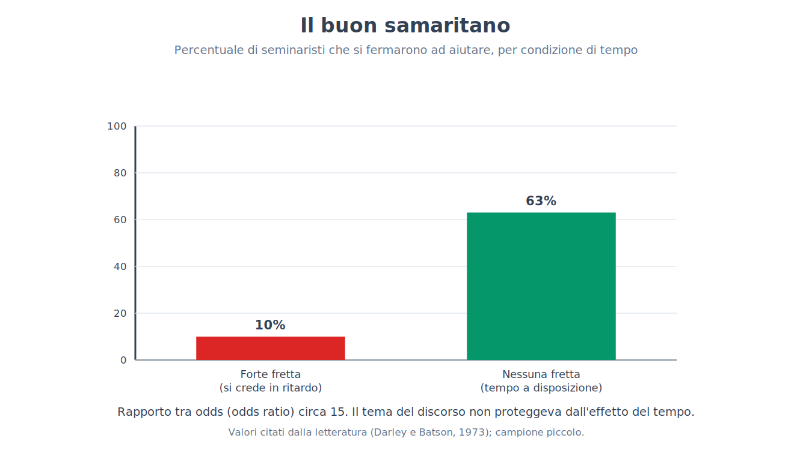
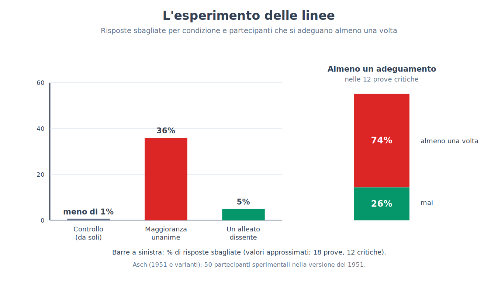
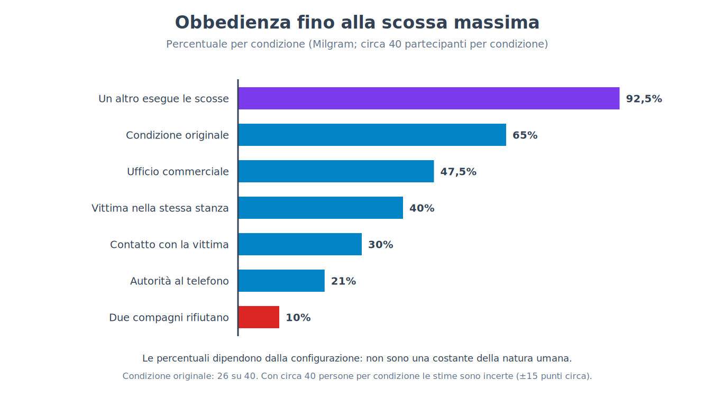
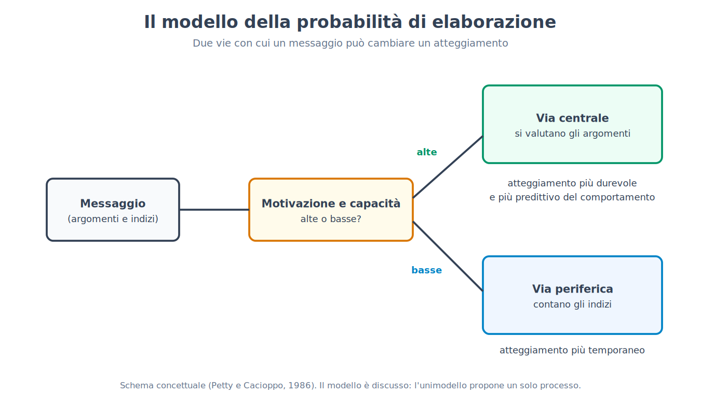
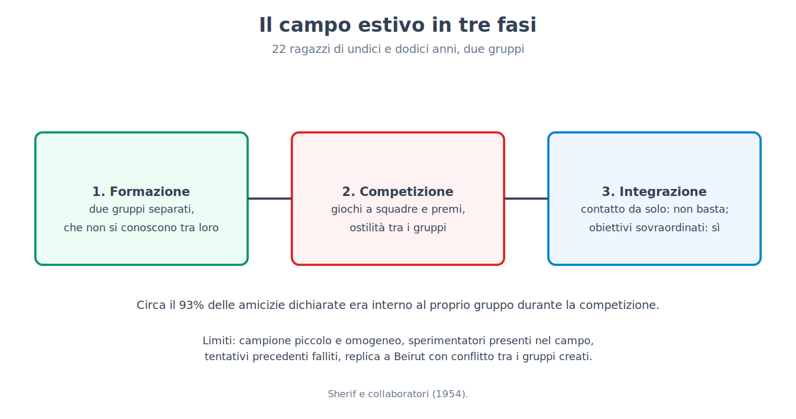
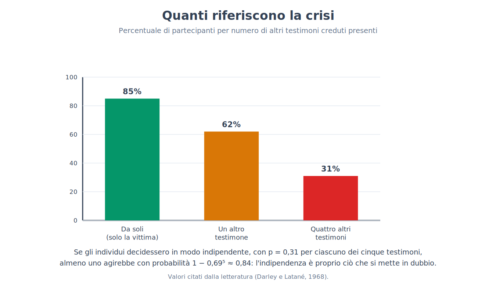

Parte XI. Psicologia sociale
Capitolo 66 — La situazione più forte della disposizione
[IN DUE PAROLE]
Quando vediamo qualcuno comportarsi male tendiamo a pensare che sia fatto così; la psicologia sociale ha costruito una parte consistente della sua storia mostrando che la situazione pesa più di quanto crediamo. Questo capitolo espone la tesi, l'errore di attribuzione che la motiva, due esperimenti simbolo (uno sull'aiuto, uno sul carcere simulato), e li legge oggi: uno regge con cautele, l'altro è stato in gran parte ridimensionato. La tesi che ne esce è più sottile dell'originale.
Il capitolo 63 si era chiuso con una posizione intermedia: il comportamento dipende dalla persona, dalla situazione e dalla loro interazione. La parte che comincia qui prende la situazione sul serio. Chiede quali caratteristiche del contesto spostano il comportamento delle persone comuni, con quali esperimenti lo si è mostrato, e con quanta sicurezza. Il primo passo è capire perché la domanda sia stata necessaria: perché, quando osserviamo il comportamento di qualcuno, la spiegazione che viene per prima riguarda quasi sempre la persona.
Perché guardiamo la persona
Se una collega risponde in modo brusco a una domanda, la spiegazione che si forma più in fretta è che sia scortese. Pensare che abbia avuto una mattinata difficile, che fosse in ritardo per una scadenza o che la domanda le sia arrivata in un momento sbagliato richiede un passaggio in più. Per questa tendenza a spiegare il comportamento altrui con tratti, intenzioni e atteggiamenti, sottovalutando la situazione, Lee Ross (1977) propose il nome di errore fondamentale di attribuzione (fundamental attribution error). Lo definì il «fondamento concettuale» della psicologia sociale, un'espressione che l'autore di uno degli esperimenti da cui era partito giudicò poi provocatoria e in parte fuorviante.
[IL DISEGNO DELL'ESPERIMENTO]
L'esperimento da cui parte tutto è di Edward Jones e Victor Harris (1967). I partecipanti leggevano un saggio a favore o contro Fidel Castro, scritto da uno studente, e dovevano valutare quanto l'autore fosse favorevole a Castro. A una metà dei partecipanti veniva detto che l'autore aveva scelto liberamente la posizione da difendere; all'altra metà, che gli era stata assegnata dallo sperimentatore, con un lancio di moneta. Il risultato atteso, quando la scelta era libera, era che l'autore del saggio a favore apparisse più favorevole a Castro dell'autore del saggio contro. Il risultato sorprendente è che l'effetto restava, attenuato ma presente, anche quando la posizione era stata assegnata a caso: chi giudicava non riusciva a non attribuire all'autore una convinzione sincera, nonostante sapesse che quell'autore non aveva scelto che cosa scrivere.
L'esperimento è un buon esempio di come si studia un errore: si costruisce una situazione in cui la risposta corretta è nota (la posizione era stata assegnata a caso, quindi il saggio dice poco dell'autore) e si osserva se i partecipanti la usano. Il risultato non dice però che le persone ignorino sempre la situazione: dice che, in queste condizioni, la attribuiscono meno di quanto la logica richiederebbe.
[QUESTIONE CONTROVERSA]
Il costrutto ha avuto una storia più movimentata del suo successo popolare. Una critica distingue due cose spesso confuse: la tendenza a spiegare il comportamento con disposizioni (l'errore di attribuzione in senso stretto) e quella a inferire una disposizione da un comportamento che potrebbe dipendere dalla situazione (il cosiddetto bias di corrispondenza). Una rassegna di Bertram Malle (2006) ha trovato poco sostegno alla prima forma, mentre la seconda regge meglio. Altri autori (Walker, Smith e Vul, 2015) sostengono che molti risultati sono stati interpretati come errori solo perché confrontati con un modello di razionalità inadatto. Anche l'universalità è discussa: il bias di corrispondenza compare in culture diverse, ma risulta più marcato nelle società individualiste, mentre i bambini cresciuti in India tendono a dare più peso alla situazione dei coetanei americani. La tendenza a guardare la persona è reale; la sua entità, la sua forma e il suo carattere di «errore» sono oggetto di discussione.
Il buon samaritano
[IL DISEGNO DELL'ESPERIMENTO]
Nello studio di John Darley e Daniel Batson (1973), studenti di un seminario teologico venivano invitati a registrare un breve discorso in un altro edificio del campus. Ad alcuni veniva assegnato come tema la parabola del buon samaritano, quella dell'uomo che si ferma ad aiutare uno sconosciuto ferito; ad altri un tema diverso. Prima di avviarsi, i partecipanti ricevevano un'indicazione sul tempo: alcuni sentivano di essere già in ritardo, altri di avere ancora qualche minuto, altri di avere tempo in più. Lungo il percorso trovavano, seduto in un vicolo con la testa china, tossendo e gemendo, un uomo (un complice) apparentemente bisognoso di aiuto. La variabile misurata era se si fermassero e come. Prima dell'esperimento erano state raccolte anche misure di religiosità, per vedere se predicessero l'aiuto.
I risultati sono tra i più citati della psicologia sociale: si fermò a offrire aiuto il 10% di chi era in forte ritardo, contro il 63% di chi non aveva fretta. Il tema del discorso non proteggeva in modo affidabile dall'effetto della fretta: chi stava per parlare del samaritano si fermò un po' più spesso (53% contro 29%), ma con 40 partecipanti la differenza non era statisticamente significativa, mentre l'effetto della fretta lo era.
[FORMULA]
L'effetto di una condizione sulla probabilità di aiutare si può esprimere con il rapporto tra odds (odds ratio), che confronta le probabilità in due gruppi tenendo conto di quanto sono lontane dagli estremi:
OR = [p₁ / (1 − p₁)] / [p₂ / (1 − p₂)]
Dove:
• p₁ è la proporzione di persone che aiutano nella condizione di confronto (nessuna fretta);
• p₂ è la proporzione di persone che aiutano nell'altra condizione (forte fretta);
• p / (1 − p) è l'odds: il rapporto tra la probabilità di aiutare e quella di non aiutare;
• OR vale 1 se le due condizioni non differiscono, ed è tanto maggiore di 1 quanto più la prima condizione favorisce l'aiuto.
Esempio di calcolo. Con p₁ = 0,63 e p₂ = 0,10: odds nella condizione senza fretta = 0,63 / 0,37 ≈ 1,70; odds nella condizione di fretta = 0,10 / 0,90 ≈ 0,11. Il rapporto è OR ≈ 1,70 / 0,11 ≈ 15. Per chi non ha fretta, le probabilità relative di aiutare invece di non aiutare sono circa quindici volte più alte. Un effetto così grande in un campione piccolo va letto con la cautela del capitolo 5: gli effetti stimati su pochi partecipanti tendono a ridursi nelle repliche.

Che cosa dice il risultato? Una lettura è che la fretta renda le persone indifferenti agli altri. Gli stessi autori propongono una lettura diversa, e più accurata rispetto a ciò che il disegno consente di dire: chi era in ritardo viveva un conflitto tra l'impegno preso con lo sperimentatore e il bisogno dello sconosciuto, e in quella condizione dava la precedenza all'impegno. In entrambe le letture, la spiegazione sta nella situazione e non in una mancanza di bontà della persona: un seminarista in ritardo non è più cattivo dello stesso seminarista con tempo a disposizione.
Va detto che lo studio ha limiti. Il campione era piccolo (alcune decine di seminaristi), un solo contesto e un solo tipo di aiuto, e le misure di personalità raccolte non erano state in grado di prevedere l'aiuto meglio della situazione. Che la situazione abbia in certi contesti un effetto potente è un risultato solido; che la fretta abbia sempre un effetto di questa grandezza non è dimostrato.
[CONVINZIONE DIFFUSA]
«Chi passa accanto a una persona in difficoltà senza fermarsi è una persona insensibile.» Il risultato di Darley e Batson mostra che la stessa persona può aiutare o non aiutare a seconda del tempo che pensa di avere. Dire che chi non si ferma è insensibile è una spiegazione disposizionale di un comportamento che, in quello studio, dipendeva in modo visibile dalla situazione. Non significa che non esistano differenze tra le persone nella disponibilità ad aiutare, ma che, da un singolo comportamento in una situazione, la conclusione sul carattere è molto meno solida di quanto sembri.
Il carcere simulato
[IL DISEGNO DELL'ESPERIMENTO]
Nell'esperimento di Philip Zimbardo e colleghi (1971, noto come esperimento della prigione di Stanford), vennero selezionati 24 studenti maschi tra 75 candidati che avevano risposto a un annuncio per uno studio sulla «vita carceraria» della durata prevista di una o due settimane, con un compenso giornaliero. L'assegnazione al ruolo di guardia o di prigioniero fu casuale. Nel seminterrato di un edificio universitario era stato allestito un finto carcere; le guardie indossavano uniformi e occhiali scuri riflettenti e ricevevano un'indicazione generica: mantenere l'ordine senza ricorrere alla violenza fisica. I prigionieri venivano «arrestati» a casa, identificati con un numero e rinchiusi. Lo studio fu interrotto dopo sei giorni, anziché dopo le due settimane previste, perché il comportamento delle guardie e le reazioni dei prigionieri erano diventati preoccupanti. Nei resoconti, alcune guardie diventavano sempre più umilianti e alcuni prigionieri mostravano segni di crollo emotivo, tanto che uno fu rilasciato dopo circa trentasei ore.
Per decenni lo studio è stato presentato come la dimostrazione che una situazione, e in particolare un ruolo con poteri asimmetrici, trasforma persone comuni in persone crudeli. La lettura attuale è molto più cauta, per ragioni che riguardano il disegno stesso.
[REGGE ANCORA?]
Le obiezioni sono quattro. La prima riguarda le caratteristiche della domanda (demand characteristics), cioè gli indizi con cui una situazione sperimentale suggerisce ai partecipanti che cosa ci si aspetta da loro: già nel 1975 Carlo Banuazizi e Siamak Movahedi sostenevano che i partecipanti sapessero che cosa ci si aspettava da loro e si comportassero di conseguenza. La seconda riguarda le istruzioni alle guardie: dalle registrazioni e dalle testimonianze (Thibault Le Texier, 2018 e 2019) risulta che le guardie furono sollecitate a essere «dure», il che rende il comportamento il risultato di una richiesta e non di una scivolata spontanea nel ruolo. La terza riguarda la selezione: l'annuncio parlava di vita carceraria, e uno studio (Carnahan e McFarland, 2007) ha trovato che un annuncio di questo tipo attira persone con tratti più aggressivi e autoritari di un annuncio generico. La quarta riguarda la replicabilità: non esiste una replica diretta, il campione è piccolo, non c'è una condizione di controllo, e le dimensioni dell'effetto non sono quantificabili. Gli autori e alcuni colleghi hanno ribattuto, in una dichiarazione congiunta del 2018, che lo studio mantiene validità; nella discussione resta aperta in particolare la questione di quanto il comportamento delle guardie sia stato spontaneo.
Un test indiretto è venuto da un tentativo di replica parziale, trasmesso dalla televisione e studiato da Alexander Haslam e Stephen Reicher (lo studio della prigione della BBC, pubblicato nel 2006), in cui le guardie non ricevettero indicazioni su come comportarsi. Il risultato fu diverso: i partecipanti non si lasciarono scivolare in modo meccanico nei ruoli assegnati, e l'emergere di comportamenti tirannici dipese da come il gruppo si identificò con i ruoli e da chi esercitò la leadership. Gli autori ne hanno tratto la tesi che le persone non obbediscano a un ruolo in modo passivo ma si identifichino con un gruppo e con chi lo guida. Anche questa è un'interpretazione, e il disegno, con la sua natura televisiva, non è esente da critiche.
[ATTENZIONE AL SALTO]
Dal fatto che in una situazione costruita ad arte alcune persone abbiano mostrato comportamenti crudeli non segue che chiunque, messo nella stessa situazione, li mostrerebbe, né che la situazione da sola basti a produrli. Dall'osservazione che un ruolo possa accompagnarsi a certi comportamenti non segue che li causi: nello studio di Stanford le istruzioni, le aspettative e la selezione sono variabili confuse con il ruolo. Il salto più comune è dall'esperimento di laboratorio al giudizio morale su casi reali di violenza istituzionale: l'esperimento di Stanford non è la prova che spiega, per esempio, come avvengano gli abusi nelle carceri vere.
Che cosa resta della tesi
Dopo queste letture la tesi originaria va riformulata. Non regge nella forma forte, secondo cui le situazioni determinano il comportamento e le persone contano poco: l'esperimento del samaritano mostra un effetto grande della fretta, ma non quantifica l'effetto delle differenze tra persone, che nel capitolo 63 avevano correlazioni dello stesso ordine di molti effetti situazionali. Regge in una forma più modesta: le situazioni hanno effetti sostanziali, spesso sottovalutati da chi osserva, e meccanismi come il conflitto tra impegni, l'identificazione con un gruppo e le richieste di un'autorità producono effetti che non si prevedono dai soli tratti. I tre capitoli che seguono mostrano quanto in pratica pesi l'influenza degli altri sul comportamento: il conformismo (capitolo 67), l'obbedienza (capitolo 68) e la dissonanza tra ciò che facciamo e ciò che pensiamo (capitolo 69). Il capitolo 72 tornerà sull'aiuto e sui comportamenti di gruppo.
Da un punto di vista metodologico, questo capitolo ha anche un'istruzione per il resto della parte: gli esperimenti più celebri della psicologia sociale sono spesso quelli con campioni piccoli, situazioni costruite e risultati forti, cioè le condizioni in cui, secondo il capitolo 5, un effetto ha più probabilità di essere sovrastimato. Ciò non li rende falsi, e la loro importanza storica non è in discussione; vuol dire che il modo corretto di leggerli è insieme ai dati più recenti.
[NUMERI]
• 10% contro 63%: persone che si fermarono ad aiutare, rispettivamente con forte fretta e senza fretta (Darley e Batson, 1973); odds ratio circa 15.
• 24 su 75: studenti selezionati tra i candidati per lo studio di Stanford; durata prevista una o due settimane, interrotto dopo sei giorni.
• Nessuna cifra di dimensione dell'effetto è disponibile per lo studio di Stanford: manca un confronto con una condizione di controllo.
[MINI-CRONOLOGIA]
• 1967: Jones e Harris, il saggio su Castro.
• 1971: esperimento della prigione di Stanford.
• 1973: il buon samaritano (Darley e Batson).
• 1977: Ross conia «errore fondamentale di attribuzione».
• 2006: studio della prigione della BBC (Haslam e Reicher); rassegna di Malle sull'asimmetria attore-osservatore.
• 2018-2019: Le Texier mette in discussione il racconto classico dello studio di Stanford.
[IL PUNTO CHIAVE DEL CAPITOLO]
• Tendiamo a spiegare il comportamento altrui con tratti più che con la situazione (errore fondamentale di attribuzione, Ross, 1977); il costrutto è discusso, e la forma in senso stretto ha meno sostegno del bias di corrispondenza.
• Nello studio di Jones e Harris (1967) i partecipanti attribuivano all'autore di un saggio una convinzione sincera anche quando la posizione era stata assegnata a caso.
• Nello studio del buon samaritano (Darley e Batson, 1973) aiutò il 10% di chi era in forte ritardo e il 63% di chi non aveva fretta (odds ratio circa 15); l'effetto del tema del discorso non era statisticamente significativo. Il campione era piccolo (40 seminaristi).
• L'esperimento di Stanford (1971) non regge come dimostrazione che il ruolo produca crudeltà: caratteristiche della domanda, istruzioni alle guardie e selezione sono variabili confuse con il ruolo, e manca una replica diretta.
• La tesi regge in forma modesta (le situazioni pesano e sono sottovalutate) e non in forma forte (le persone contano poco).
Capitolo 67 — Conformismo
[IN DUE PAROLE]
Quanto cambiamo ciò che diciamo, o ciò che crediamo, perché altri dicono il contrario? Questo capitolo espone i due esperimenti che hanno definito il problema (uno su un giudizio ambiguo, uno su un giudizio evidente), i fattori che aumentano o riducono il conformismo, la distinzione tra due tipi di influenza, e che cosa è rimasto dopo le repliche e i confronti tra epoche e culture. La tesi è meno cupa di come viene di solito raccontata.
Immagina di essere in una stanza con altre sette persone, davanti a due cartoncini: su uno c'è una linea, sull'altro tre linee di lunghezze diverse, e devi dire quale delle tre è uguale alla prima. Il compito è così facile che chiunque, da solo, risponde giusto quasi sempre. Poi, uno dopo l'altro, i sette che ti precedono dicono la stessa risposta, e quella risposta è palesemente sbagliata. Che cosa fai? La domanda, posta così, divide chi la ascolta: quasi tutti sono certi che direbbero ciò che vedono. I dati raccontano un quadro più articolato, e per capirlo conviene partire da un compito in cui il giudizio giusto non esiste.
Quando non si sa che cosa pensare: la norma che nasce nel gruppo
[IL DISEGNO DELL'ESPERIMENTO]
Muzafer Sherif (1935) sfruttò un fenomeno percettivo: in una stanza completamente buia, un punto luminoso fisso sembra muoversi (effetto autocinetico), anche se non si muove affatto. Ai partecipanti veniva chiesto di stimare, a voce, di quanto si fosse spostato il punto. Da soli, ciascuno sviluppava un proprio intervallo di stime, stabile ma diverso da quello degli altri. Poi i partecipanti venivano riuniti in piccoli gruppi e ripetevano il compito dicendo le stime ad alta voce, in presenza degli altri. In queste condizioni le stime dei membri convergevano verso un valore comune, che il gruppo sviluppava da sé. In altre versioni, chi aveva fatto il compito prima in gruppo e poi da solo manteneva la stima del gruppo e non tornava alla propria.
Il compito è costruito in modo che nessuno possa avere ragione: il punto non si muove, quindi ogni stima è arbitraria. Quando la realtà non offre un criterio, le persone usano gli altri come fonte di informazione, e il risultato è la nascita di una norma sociale (social norm), cioè una regola condivisa su che cosa si ritiene appropriato o corretto. Resta aperta una domanda: che cosa succede quando un criterio c'è, e gli altri lo contraddicono?
Quando si sa che cosa pensare: le linee
[IL DISEGNO DELL'ESPERIMENTO]
Nell'esperimento di Solomon Asch (1951, con varianti nel 1955 e nel 1956), un gruppo di studenti maschi in un college veniva invitato a partecipare a una prova di «percezione visiva». In ogni gruppo c'era un solo partecipante ignaro; gli altri, circa sette, erano complici dello sperimentatore. In ogni prova il gruppo vedeva una linea di riferimento e tre linee di confronto, una delle quali identica alla prima; le altre differivano in modo evidente. Ciascuno doveva dire ad alta voce quale fosse, in ordine, con il partecipante ignaro quasi sempre tra gli ultimi a rispondere. Le prove erano diciotto: in dodici (le prove critiche) i complici davano, tutti insieme, la stessa risposta sbagliata, concordata in anticipo. Un gruppo di controllo, in cui i partecipanti rispondevano da soli o senza pressione, mostrava quanto fosse facile il compito: gli errori erano meno dell'uno per cento. I partecipanti sperimentali erano 50 nella versione del 1951.
Nelle prove critiche i partecipanti si adeguarono alla risposta sbagliata del gruppo in poco più di un terzo delle risposte (le fonti riportano valori tra il 35 e il 37% a seconda della versione). Il 74% di loro, cioè quasi tre su quattro, si adeguò almeno una volta nelle dodici prove critiche. Il 26% non lo fece mai, e circa il 12% si adeguò in quasi tutte le prove. Le interviste successive indicavano motivazioni diverse: alcuni partecipanti dicevano di aver dubitato della propria vista; altri sapevano di aver visto giusto e si erano adeguati per non distinguersi.
[CONVINZIONE DIFFUSA]
«Asch dimostrò che la maggior parte delle persone si piega alla maggioranza.» Il dato non lo dice. In due risposte su tre i partecipanti diedero la risposta giusta nonostante l'unanimità degli altri, e più di uno su quattro non si adeguò mai. Quello che il dato mostra è un'altra cosa: in un compito in cui sbagliare era evidente, una pressione sociale ridotta all'osso (persone sconosciute, senza ricompense né sanzioni) bastava a far dare una risposta sbagliata a quasi tre persone su quattro, almeno una volta. La differenza tra «la maggior parte si piega sempre» e «quasi tutti si piegano qualche volta» è la differenza tra un'immagine falsa e una vera.
[FORMULA]
Se ogni persona avesse la stessa probabilità p di adeguarsi in ogni prova, e le prove fossero indipendenti, la probabilità di adeguarsi almeno una volta in n prove critiche sarebbe:
P(almeno una volta) = 1 − (1 − p)ⁿ
Dove:
• p è la probabilità di adeguarsi in una singola prova critica;
• 1 − p è la probabilità di rispondere in modo indipendente in quella prova;
• n è il numero di prove critiche;
• (1 − p)ⁿ è la probabilità di non adeguarsi mai in nessuna delle n prove, se le prove sono indipendenti.
Esempio di calcolo. Con p = 0,36 e n = 12: (1 − 0,36)¹² = 0,64¹² ≈ 0,005, quindi P(almeno una volta) ≈ 1 − 0,005 = 0,995, cioè circa il 99,5%. Il valore osservato da Asch è invece il 74%. La differenza non è un errore dello studio: dice che le persone non sono tutte uguali. Se alcune non si adeguano mai e altre si adeguano quasi sempre, la probabilità media di un terzo non descrive nessuno in particolare, e l'ipotesi che ognuno abbia lo stesso p cade.

Due modi di essere influenzati
Morton Deutsch e Harold Gerard (1955) proposero di distinguere due ragioni per cui gli altri ci influenzano. L'influenza informativa (informational influence) opera quando gli altri sono una fonte di informazione sulla realtà: se tutti dicono che il punto si è spostato di quindici centimetri, probabilmente hanno ragione, o almeno è ciò che mi aiuta a decidere. L'influenza normativa (normative influence) opera quando mi adeguo per essere accettato dal gruppo o per evitare il disagio di distinguermi, anche senza credere che gli altri abbiano ragione. L'esperimento di Sherif è soprattutto un caso del primo tipo: nessun criterio esterno, quindi gli altri sono l'unica informazione. Quello di Asch è soprattutto un caso del secondo: il criterio c'è ed è evidente, e chi si adegua lo fa perché è a disagio nel contraddire sette persone, non perché le creda. Resta distinto anche l'esito: si può adeguare il comportamento senza cambiare opinione (adeguamento pubblico), oppure cambiare effettivamente ciò che si pensa (accettazione privata). Asch ha osservato soprattutto il primo.
Che cosa fa aumentare e diminuire il conformismo
Asch stesso variò le condizioni, e le variazioni sono la parte più istruttiva del lavoro. Il fattore più potente è l'unanimità: bastava un solo complice che desse la risposta giusta perché il numero di risposte sbagliate scendesse fortemente, a circa il 5%. Un solo alleato, anche se non era un esperto, rendeva molto più facile esprimere il proprio giudizio. Contava anche il numero dei complici: con un solo avversario il conformismo era basso; aumentava in modo sensibile con due o tre, e oltre tre non cresceva più. Il conformismo calava quando la risposta era scritta e non detta ad alta voce, cioè quando l'adeguamento non era visibile agli altri. E dipendeva dalla difficoltà del compito: più il giudizio era ambiguo, maggiore era l'influenza degli altri.
[QUESTIONE CONTROVERSA]
Il conformismo cambia con le epoche e le culture? Una meta-analisi che ha raccolto studi con il compito di Asch in diversi paesi (Bond e Smith, 1996) ha riportato un conformismo più alto nelle culture che valorizzano di più il gruppo rispetto all'individuo, e un calo nel tempo negli studi statunitensi dopo gli anni Cinquanta. Una replica britannica con studenti di ingegneria (Perrin e Spencer, 1980) ha trovato un conformismo praticamente nullo, e gli autori l'hanno messa in relazione con il contesto professionale e storico dei partecipanti. Le letture possibili sono due. Una è che il conformismo cambi con i valori della società e con le caratteristiche dei partecipanti. L'altra è che i risultati dipendano da dettagli del disegno (come si presentano le prove, che cosa si dice ai partecipanti) e dal fatto che gli studi più recenti siano meno numerosi e meno uniformi. I dati non permettono ancora di scegliere. Va tenuto presente che il campione originale era composto da studenti maschi di college americani.
Che cosa regge e che cosa no
[REGGE ANCORA?]
Il fatto centrale regge: una maggioranza unanime può portare una parte non piccola delle persone a dichiarare, almeno una volta, un giudizio che sanno sbagliato, e un solo dissenziente lo riduce molto. Non regge la lettura secondo cui le persone «seguono sempre la folla». Non è dimostrato che l'effetto abbia la stessa grandezza oggi, in altre culture e in contesti con conseguenze reali: il conformismo osservato in laboratorio riguarda un compito privo di importanza, tra sconosciuti, senza alcun costo per chi dissente.
[ATTENZIONE AL SALTO]
Dal fatto che sette sconosciuti riescano a far sbagliare a un compito di linee non segue che lo stesso accada con decisioni importanti, con persone care, o in un'azienda o in una scuola. La pressione sociale reale può essere più forte (c'è un costo sociale a dissentire) o più debole (si ha il tempo di confrontarsi e di cercare un alleato). Dal fatto che la maggioranza dei giudizi restasse indipendente non segue neppure che il conformismo sia raro: la domanda cambia a seconda che si guardi la risposta singola o la persona.
Il conformismo non è sempre un difetto. Seguire le indicazioni degli altri è spesso un modo efficiente di avere informazioni corrette, e l'esperimento di Sherif mostra come nasca una convenzione comune. Il problema che l'esperimento di Asch fa vedere è il caso in cui il giudizio personale è giusto e il gruppo sbaglia, e quello che serve a correggere l'errore è, secondo il risultato sulle varianti, un solo alleato. Il prossimo capitolo passa da un gruppo di pari a un'autorità: da chi dice qualcosa a chi dà un ordine.
[NUMERI]
• 50 partecipanti sperimentali (1951); 18 prove, di cui 12 critiche; circa sette complici per gruppo.
• Meno dell'1% di errori nel controllo; poco più di un terzo (35-37%) di risposte conformi nelle prove critiche.
• 74% si adegua almeno una volta; 26% mai; circa 12% quasi sempre.
• Circa 5% di risposte conformi con un alleato che dà la risposta giusta.
• Il modello a probabilità costante prevederebbe circa il 99,5% di adeguamento almeno una volta (esempio): il valore osservato è del 74%.
[MINI-CRONOLOGIA]
• 1935: Sherif e la norma nell'effetto autocinetico.
• 1951: Asch e il compito delle linee (varianti nel 1955 e 1956).
• 1955: Deutsch e Gerard distinguono influenza informativa e normativa.
• 1980: replica britannica con conformismo quasi nullo.
• 1996: meta-analisi di Bond e Smith su culture e anni.
[IL PUNTO CHIAVE DEL CAPITOLO]
• Quando non esiste un criterio (effetto autocinetico, Sherif, 1935) le stime dei partecipanti convergono in una norma di gruppo.
• Nell'esperimento delle linee (Asch, 1951) circa un terzo delle risposte in prove critiche era conforme e il 74% dei partecipanti si adeguò almeno una volta; il 26% mai, e due risposte su tre restavano indipendenti.
• Con probabilità costante p ≈ 0,36 e dodici prove, adeguarsi almeno una volta sarebbe quasi certo (1 − (1 − p)ⁿ ≈ 99,5%): il 74% osservato mostra le differenze individuali.
• L'influenza è informativa (gli altri sono una fonte di informazioni) o normativa (si cerca l'accettazione); si può adeguare il comportamento senza cambiare opinione.
• Un solo alleato riduce molto il conformismo; l'effetto cresce fino a circa tre persone e poi si ferma; la risposta privata lo riduce.
• Le differenze tra culture ed epoche e una replica con conformismo nullo mostrano che l'effetto dipende dal contesto; il campione era di studenti maschi americani.
Capitolo 68 — Obbedienza
[IN DUE PAROLE]
Persone comuni, in un laboratorio universitario, hanno continuato a infliggere scosse sempre più forti a uno sconosciuto perché un ricercatore glielo chiedeva. Questo capitolo espone il disegno nei dettagli, i risultati per ciascuna condizione, le obiezioni sulla validità e sull'etica, che cosa riportano le riletture degli archivi, e che cosa si può ancora sostenere. Chiude la promessa sulla validità ecologica (capitolo 3) e applica al caso i criteri di replicabilità del capitolo 5.
Chiedi a chiunque perché delle persone comuni abbiano inflitto sofferenza a uno sconosciuto solo perché un uomo in camice grigio lo chiedeva, e quasi sempre sentirai la stessa risposta: dovevano essere particolarmente crudeli o particolarmente deboli. La risposta rassicura, perché lascia intatta l'idea che noi, al loro posto, ci saremmo comportati diversamente. Il problema è che i dati dell'esperimento originale non confermano che quelle persone fossero insolite: erano state reclutate con un annuncio, senza altri criteri. Se la spiegazione non sta nel carattere di chi obbedisce, deve stare altrove. Per capire dove, bisogna vedere come l'esperimento era fatto, perché ogni parola del disegno conta.
Il disegno originale
[IL DISEGNO DELL'ESPERIMENTO]
Nell'esperimento di Stanley Milgram (1963), condotto all'Università di Yale, 40 uomini tra i venti e i cinquant'anni, reclutati con un annuncio per uno studio sulla «memoria e l'apprendimento», si presentavano al laboratorio in coppia con un altro «partecipante», in realtà un complice. Con un'estrazione truccata, al partecipante vero toccava sempre il ruolo di «insegnante» e al complice quello di «allievo». L'allievo veniva legato a una sedia in una stanza accanto, con degli elettrodi ai polsi, mentre l'insegnante, in un'altra stanza, sedeva davanti a un generatore di scosse con trenta interruttori, da 15 a 450 volt, con etichette che andavano da «scossa leggera» a «pericolo: scossa grave» e, per gli ultimi due, a un semplice «XXX». Il compito dell'insegnante era leggere coppie di parole e somministrare una scossa, più forte a ogni errore. L'allievo, seguendo un copione, sbagliava spesso e protestava in modi via via più intensi; a un certo livello batteva sulla parete e poi non rispondeva più. Se l'insegnante esitava, lo sperimentatore, in camice grigio, rispondeva con quattro frasi in ordine fisso: «Prosegua, per favore»; «L'esperimento richiede che lei continui»; «È assolutamente indispensabile che lei continui»; «Non ha altra scelta, deve continuare». Dopo il quarto rifiuto, l'esperimento terminava. Non venivano esercitate costrizioni né minacce. Nessuna scossa veniva realmente somministrata.
Prima dell'esperimento, a un gruppo di persone competenti (tra cui psichiatri) venne chiesto di prevedere quanti partecipanti avrebbero raggiunto la scossa massima: le stime indicavano una frazione minima, nell'ordine di pochi casi patologici. Il risultato fu molto diverso. Tutti e quaranta i partecipanti raggiunsero i 300 volt; 26 su 40, il 65%, proseguirono fino all'ultimo interruttore, quello da 450 volt. Molti mostravano forte tensione: sudavano, tremavano, ridevano in modo nervoso, protestavano, ma proseguivano.
Le condizioni sperimentali
Milgram non si fermò alla versione originale: condusse una ventina di varianti, ciascuna modificando un solo aspetto del disegno, tutte con campioni intorno a quaranta persone. Queste varianti sono la parte più istruttiva del lavoro, perché mostrano da che cosa dipende l'obbedienza.

Nella condizione in cui lo sperimentatore dava le istruzioni al telefono e non era presente, obbedì il 21% circa. Quando l'allievo era nella stessa stanza, l'obbedienza scese al 40%; quando l'insegnante doveva premere la mano dell'allievo su una piastra per erogare la scossa, al 30%. Quando l'esperimento si svolgeva in un ufficio commerciale invece che a Yale, si osservò il 47,5%, una differenza non significativa rispetto alla condizione originale. Due variazioni mostrano l'effetto degli altri: quando due compagni (complici) rifiutavano di proseguire durante l'esperimento, l'insegnante proseguì fino in fondo solo in 4 casi su 40, il 10%. Quando, invece, un altro «insegnante» (complice) eseguiva materialmente le scosse e il partecipante si limitava a leggere le parole e registrare le risposte, quasi tutti, 37 su 40, rimasero fino alla fine.
[FORMULA]
Un'obbedienza del 65% su 40 persone è una stima, e va accompagnata dalla sua incertezza. L'errore standard di una proporzione misura quanto la proporzione osservata può variare per puro effetto del campione:
ES = √[ p̂ · (1 − p̂) / n ]
Da cui un intervallo di confidenza al 95% approssimato (come nel capitolo 4): p̂ ± 1,96 · ES
Dove:
• p̂ (p con cappello) è la proporzione osservata nel campione;
• n è il numero di partecipanti;
• ES è l'errore standard;
• 1,96 è il valore che lascia fuori il 5% dei casi, metà per lato, in una distribuzione a campana.
Esempio di calcolo. Con p̂ = 26/40 = 0,65 e n = 40: ES = √(0,65 · 0,35 / 40) = √0,00569 ≈ 0,075. L'intervallo è 0,65 ± 1,96 · 0,075 = 0,65 ± 0,15, cioè da circa 0,50 a 0,80. L'obbedienza in quella condizione, nella popolazione da cui i 40 provengono, è plausibilmente compresa tra il 50% e l'80%. Per la variante con l'ufficio commerciale (19 su 40, il 47,5%) l'intervallo è circa 0,32-0,63: i due intervalli si sovrappongono molto, e questo spiega perché la differenza di 17,5 punti non risulti significativa (un confronto diretto tra le due proporzioni dà lo stesso esito: z ≈ 1,6, p ≈ 0,11).
Che cosa spiega l'obbedienza
Milgram propose di spiegarla con lo stato agentico (agentic state): una persona che si pone al servizio di un'autorità legittima smette di sentirsi responsabile delle proprie azioni e si considera uno strumento di chi comanda. Le varianti sembrano compatibili con questa idea: l'obbedienza calava quando l'autorità era lontana o il suo ruolo era messo in discussione (i due compagni che rifiutavano) e quando la vittima era più vicina. Resta però un problema, che le analisi più recenti hanno messo in luce.
Alexander Haslam, Stephen Reicher e colleghi hanno analizzato le registrazioni e le varianti, e hanno notato che le quattro frasi dello sperimentatore non avevano lo stesso effetto. Le frasi che suonavano come ordini diretti («Non ha altra scelta, deve continuare») riducevano l'obbedienza, mentre quelle che richiamavano l'importanza dell'esperimento per la scienza («L'esperimento richiede che lei continui») la aumentavano. Se fosse bastato un ordine a produrre obbedienza, sarebbe accaduto il contrario. La lettura proposta, detta adesione partecipata (engaged followership), è che i partecipanti proseguissero non per obbedire a un ordine ma perché si identificavano con il progetto scientifico e con chi lo rappresentava, convinti di contribuire a una causa che consideravano valida.
[QUESTIONE CONTROVERSA]
Obbedienza a un'autorità o identificazione con una causa? Nella lettura classica, il partecipante cede la responsabilità a chi comanda. Nella lettura di Haslam e Reicher, il partecipante si impegna attivamente per un obiettivo che condivide, e la persona che comanda è il rappresentante di quel valore. Le due letture prevedono comportamenti diversi: la prima, che le frasi più autoritarie funzionino meglio; la seconda, che funzionino meglio quelle che richiamano lo scopo. I dati sulle quattro frasi sono più vicini alla seconda. Non ne segue però che la prima sia da scartare del tutto: le varianti sulla presenza e sulla distanza dell'autorità sono compatibili con entrambe, e la ricostruzione del processo psicologico dai soli esiti comportamentali resta incerta.
La validità: che cosa si è visto negli archivi
Il capitolo 3 aveva lasciato aperta la questione della validità ecologica (3 → 68): un risultato ottenuto in un laboratorio costruito ad arte si applica alla vita reale? Per l'esperimento di Milgram la domanda ha due versioni. La prima è se i partecipanti credessero che le scosse fossero reali. La seconda è se l'obbedienza a uno scienziato in un laboratorio dica qualcosa sull'obbedienza fuori dal laboratorio.
Sulla prima, una rilettura degli archivi di Milgram da parte di Gina Perry (2012) ha riportato che soltanto circa la metà dei partecipanti credeva pienamente alla procedura, e che, tra quelli che ci credevano, circa due terzi (il 66%) avevano disobbedito. Se questo dato regge, la percentuale classica sarebbe stata gonfiata dai partecipanti che sospettavano la finzione. Il dato è una lettura di materiale d'archivio da parte di una sola autrice, in cui la classificazione di chi «credeva» è essa stessa un'interpretazione, e non è stato confermato in modo indipendente. Milgram stesso aveva chiesto ai partecipanti, a fine studio, quanto avessero creduto alla procedura, e riportò che una quota consistente, ma non la totalità, dichiarava di crederci; i due resoconti differiscono nell'interpretazione di che cosa conti come «credere», e non c'è modo di ripetere la procedura per decidere.
Sulla seconda, la letteratura è divisa. Lo studio mostra che in una situazione con un'autorità legittima, una richiesta graduale e una vittima non presente fisicamente molte persone proseguono. Non mostra che le persone obbediscano in modo passivo a qualunque ordine, né che quel meccanismo spieghi da solo comportamenti storici come quelli di chi ha partecipato a violenze collettive: alcuni storici e psicologi sostengono che chi ha commesso violenze di massa agisse anche per convinzione e identificazione con un progetto, il che è più vicino alla lettura di Haslam e Reicher.
[CONVINZIONE DIFFUSA]
«Milgram dimostrò che il 65% delle persone obbedisce a qualunque ordine, anche crudele.» Il 65% riguarda una condizione specifica, con 40 uomini, in un laboratorio universitario, con uno sperimentatore presente e vicino. Cambiando una variabile, la percentuale scendeva al 21%, al 10% o saliva al 92% (se non era il partecipante a premere l'interruttore). Il 65% non è una costante della natura umana: è il valore di una configurazione. Anche in quella configurazione, circa un terzo non proseguì fino in fondo.
L'etica
L'esperimento fu criticato quasi subito. Diana Baumrind (1964) osservò che i partecipanti erano stati sottoposti a un forte stress emotivo, ingannati sullo scopo e sulla presenza di una vittima reale, e che il debriefing non poteva annullare l'esperienza vissuta. Milgram rispose che dopo l'esperimento i partecipanti erano stati informati e che, nei questionari successivi, la grande maggioranza aveva dichiarato di essere contenta di aver partecipato. Il dibattito ha avuto un effetto duraturo sulle norme: i comitati etici di oggi non approverebbero la procedura originale, il che impedisce, di fatto, una replica diretta.
Le repliche, alla luce del capitolo 5
Il caso di Milgram mette alla prova i criteri di replicabilità del capitolo 5, perché è una situazione quasi esemplare: un risultato celebre che nessuno può ripetere nello stesso modo. Una replica parziale (Jerry Burger, 2009) ha modificato il disegno in modo da ridurre il rischio per i partecipanti: lo sperimentatore interrompeva la procedura dopo l'interruttore da 150 volt, il punto in cui l'allievo chiedeva per la prima volta di essere liberato, e quel punto era usato come indicatore di chi avrebbe proseguito. Chi aveva superato i 150 volt, nel disegno di Milgram, tendeva a proseguire fino in fondo. L'obbedienza risultò «virtualmente identica» a quella dello studio originale fino a quel livello, anche tra uomini e donne. La lettura prudente è che l'effetto di base si ritrovi, con le limitazioni di una procedura che non arriva alla fine e di un campione diverso; non risolve la questione delle percentuali esatte né dell'interpretazione.
Il quadro che ne esce, per i criteri del capitolo 5, è questo. Il risultato qualitativo (una frazione consistente di persone comuni prosegue, in condizioni definite, a infliggere un danno su richiesta di una figura di autorità) è stato osservato in molte varianti e in una replica parziale. I numeri esatti non si possono considerare stabili: i campioni erano di circa quaranta persone, mancano repliche dirette, e la lettura degli archivi mette in dubbio una parte del campione. L'interpretazione psicologica è l'aspetto meno certo.
[REGGE ANCORA?]
Regge: la conclusione che un'autorità, anche senza minacce, può portare persone comuni a infliggere danni; la dipendenza dell'obbedienza da prossimità, presenza dell'autorità e comportamento degli altri. Regge in parte: la percentuale del 65%, per le riserve su credibilità e campione. Non regge come descrizione completa: l'idea di un'obbedienza passiva e cieca, perché i dati sulle quattro frasi indicano un ruolo dell'identificazione con lo scopo.
[ATTENZIONE AL SALTO]
Dal 65% in una condizione di laboratorio non segue che due persone su tre commetterebbero atrocità se un'autorità lo chiedesse. Dall'obbedienza in laboratorio non segue che l'obbedienza spieghi i comportamenti di chi partecipa a violenze collettive. E dal fatto che uno studio non sia replicabile oggi, per ragioni etiche, non segue che i suoi risultati siano falsi: segue che la loro forza va valutata con altri mezzi.
[NUMERI]
• 40 uomini; tutti a 300 volt; 26 su 40 (65%) fino a 450 volt; intervallo di confidenza al 95% da circa 0,50 a 0,80.
• Condizioni: circa 21% (telefono), 40% (stessa stanza), 30% (contatto), 47,5% (ufficio commerciale), 10% (due compagni rifiutano), 37 su 40 (un altro esegue le scosse al posto del partecipante).
• Rilettura degli archivi (Perry, 2012): circa metà dei partecipanti credeva pienamente alla procedura; tra questi, il 66% disobbedì.
[MINI-CRONOLOGIA]
• 1963: Milgram pubblica l'esperimento di Yale.
• 1964: Baumrind critica l'etica dello studio.
• Anni Settanta: le norme sulla ricerca con soggetti umani rendono la procedura originale non ripetibile.
• 2009: replica parziale di Burger, con interruzione a 150 volt.
• 2012: Perry pubblica la rilettura degli archivi.
• Anni 2010: Haslam, Reicher e colleghi propongono la lettura come adesione partecipata.
[IL PUNTO CHIAVE DEL CAPITOLO]
• Nello studio originale (Milgram, 1963), 40 uomini: tutti arrivarono a 300 volt e 26 su 40 (65%) a 450 volt; l'intervallo di confidenza al 95% va da circa il 50% all'80%.
• L'obbedienza dipendeva dalla condizione: circa il 21% con l'autorità al telefono, 40% con la vittima nella stessa stanza, 10% se due compagni rifiutavano, quasi tutti se non erano loro a premere l'interruttore.
• Le frasi più simili a ordini riducevano l'obbedienza e quelle che richiamavano la scienza l'aumentavano: ciò sostiene la lettura per cui i partecipanti si identificavano con lo scopo, più che la lettura dell'obbedienza passiva.
• Una rilettura degli archivi (Perry, 2012) indica che circa metà dei partecipanti non credeva pienamente alla procedura, e che tra chi ci credeva il 66% disobbedì: dato non confermato in modo indipendente.
• Il disegno non è replicabile per ragioni etiche; una replica parziale (Burger, 2009) ha trovato risultati simili fino a 150 volt.
• Il risultato qualitativo regge; le percentuali esatte e l'interpretazione psicologica no.
Capitolo 69 — Dissonanza cognitiva e autogiustificazione
[IN DUE PAROLE]
Dopo aver fatto qualcosa che non corrisponde a ciò che pensiamo, tendiamo ad avvicinare le nostre convinzioni a ciò che abbiamo fatto. Questo capitolo espone la teoria della dissonanza, l'esperimento che l'ha resa celebre, altri due paradigmi, le riformulazioni successive, che cosa ha trovato una grande replica multi-laboratorio del 2024, e in che rapporto sta questa idea con la razionalizzazione descritta dalla psicoanalisi. Riprende le difese descritte nel capitolo 10 e chiude la promessa aperta dal capitolo 13.
Hai speso molto per un oggetto che si rivela mediocre: una vacanza organizzata male, un corso che costava troppo. Nei giorni successivi, se qualcuno te ne parla, noti che trovi dei pregi: «in fondo l'ambiente era tranquillo», «ho imparato più di quanto sembri». Non stai mentendo agli altri: sembra che tu stia convincendo anche te stesso. La psicologia sociale ha dato a questa tendenza un nome e una teoria, e l'ha sottoposta a esperimenti. La teoria ha una parte che regge bene e una parte che le repliche più recenti hanno messo in discussione, e distinguerle è lo scopo del capitolo.
La teoria
Leon Festinger (1957) propose che le persone tengano, in modo implicito, un bilancio delle proprie cognizioni, cioè le convinzioni, le conoscenze e le percezioni di sé e del mondo, e che due cognizioni che non stanno insieme producano uno stato spiacevole, la dissonanza cognitiva (cognitive dissonance). «Sono una persona onesta» e «ho appena detto una bugia» sono dissonanti; così «fumare fa male» e «fumo». Secondo la teoria, la dissonanza è come una tensione che spinge a ridurla, e si può farlo in modi diversi: cambiando il comportamento, cambiando una delle due convinzioni, aggiungendo una cognizione che le riconcili («fumare mi aiuta a gestire lo stress»), oppure riducendone l'importanza («la bugia era piccola»). La teoria prevede inoltre che la dissonanza sia tanto più forte quanto più le cognizioni coinvolte sono importanti e quanto più numerose sono le dissonanti rispetto alle consonanti.
[FORMULA]
Festinger propose, come modello concettuale e non come misura diretta, che la grandezza della dissonanza dipenda dal rapporto tra le cognizioni dissonanti e il totale, ciascuna pesata per la sua importanza:
D = Σ (importanza delle dissonanti) / [Σ (importanza delle dissonanti) + Σ (importanza delle consonanti)]
Dove:
• D è la grandezza della dissonanza, tra 0 (nessuna) e 1 (massima);
• Σ indica la somma sulle cognizioni di quel tipo;
• le dissonanti sono le cognizioni che contraddicono il comportamento o la convinzione in esame; le consonanti sono quelle che lo sostengono.
Esempio di calcolo (con valori illustrativi, assegnati dall'autore per mostrare la logica). Una persona ha detto una bugia: la cognizione dissonante («ho mentito») ha importanza 4. Nella condizione A c'è una cognizione consonante, «mi hanno pagato un dollaro», con importanza 1: D = 4 / (4 + 1) = 0,80. Nella condizione B la cognizione consonante è «mi hanno pagato venti dollari», con importanza 5: D = 4 / (4 + 5) ≈ 0,44. A parità di bugia, un compenso alto riduce la dissonanza, e un compenso basso la lascia alta. La formula non è mai stata una misura pratica: le «importanze» non si misurano con unità comuni, ed è per questo che la teoria è stata messa alla prova con esperimenti e non con questa equazione.
L'esperimento del compenso insufficiente
[IL DISEGNO DELL'ESPERIMENTO]
Nello studio di Leon Festinger e James Carlsmith (1959), 71 studenti maschi di Stanford (60 inclusi nell'analisi finale) eseguivano per circa un'ora compiti molto noiosi (per esempio girare ripetutamente dei pioli in una tavoletta). Alla fine, lo sperimentatore spiegava che lo studio riguardava l'effetto delle aspettative, e che il partecipante successivo, in attesa nella stanza accanto, doveva essere preparato a credere che il compito fosse interessante; l'assistente di solito incaricato di dirglielo non era disponibile e chiedeva al partecipante di farlo. Il partecipante, quindi, mentiva a una persona che si comportava da altro partecipante, ma in realtà era un complice. Per questo servizio la metà dei partecipanti riceveva un dollaro, l'altra metà venti dollari; un gruppo di controllo non diceva nulla al presunto partecipante. In un'intervista conclusiva, condotta da una persona diversa e presentata come indipendente, si chiedeva a tutti di valutare quanto avessero trovato interessante il compito.
Il risultato è l'ordine, non una semplice differenza: chi aveva ricevuto un dollaro valutava il compito come più interessante di chi aveva ricevuto venti dollari, e chi aveva ricevuto venti dollari lo valutava appena più positivamente di chi non aveva detto nulla. L'interpretazione della teoria è che venti dollari fossero una giustificazione sufficiente per la bugia: la dissonanza era bassa, e non serviva cambiare opinione. Un dollaro era una giustificazione insufficiente: la dissonanza era alta, e il modo più semplice per ridurla era cambiare l'opinione sul compito («in fondo non era così male»). Il risultato è controintuitivo, perché sembra che una ricompensa minore produca un cambiamento maggiore, ed è per questo che l'esperimento è diventato un riferimento.
Una spiegazione alternativa, proposta da Daryl Bem (1967), è la percezione di sé (self-perception): le persone deducono i propri atteggiamenti osservando il proprio comportamento, come farebbe un osservatore esterno, e un osservatore direbbe che chi ha mentito per un dollaro doveva credere in ciò che diceva. La teoria di Bem prevede gli stessi risultati senza ricorrere a uno stato spiacevole. La differenza tra le due sta nell'attivazione: la dissonanza prevede una tensione, la percezione di sé no, e alcuni studi successivi hanno misurato un aumento dell'attivazione fisiologica in condizioni di dissonanza, il che sostiene la prima, anche se non decide del tutto.
Altri due paradigmi
L'idea è stata testata anche in altre situazioni. Nel paradigma della scelta libera, dopo aver scelto tra due oggetti di valore simile, le persone valutano più positivamente l'oggetto scelto e meno quello rifiutato di quanto facessero prima, perché ogni alternativa rifiutata ha dei pregi che entrano in dissonanza con la decisione. Nella giustificazione dello sforzo, Elliot Aronson e Judson Mills (1959) trovarono che persone sottoposte a una procedura di ingresso imbarazzante per entrare in un gruppo di discussione noioso lo valutavano più interessante di chi aveva superato una procedura lieve: lo sforzo ha un costo che si giustifica pensando che il risultato valga. Questi due paradigmi sono meno solidi di quanto la loro fama farebbe credere, e i loro esiti nelle ripetizioni sono stati discussi.
Le riformulazioni
La teoria originale ha ricevuto tre riformulazioni principali, che ne cambiano il cuore. Per Aronson (1969), la dissonanza non nasce da una qualunque incongruenza ma da una minaccia all'immagine positiva di sé: è il conflitto tra «sono una persona onesta» e «ho mentito». Per Joel Cooper e Russell Fazio (anni Ottanta), l'origine della dissonanza è l'aver causato conseguenze negative: se il comportamento non ha conseguenze spiacevoli, non c'è dissonanza; studi successivi hanno trovato dissonanza anche quando i partecipanti credevano di non aver fatto nulla di sbagliato, il che complica questa lettura. Per Eddie Harmon-Jones, nel modello basato sull'azione (con Harmon-Jones e Levy, 2015), la dissonanza nasce quando le cognizioni interferiscono con un comportamento orientato a un obiettivo, e serve a rendere possibile l'azione. Un'altra proposta, l'autoaffermazione (self-affirmation), sostiene che la dissonanza si riduca anche confermando un altro valore importante per sé, senza cambiare l'opinione in questione. Le quattro riformulazioni non si escludono, e ciascuna spiega alcuni risultati meglio delle altre.
La replica del 2024
[REGGE ANCORA?]
Nel 2024 David Vaidis, Willem Sleegers e colleghi hanno pubblicato una replica costruttiva del paradigma della compliance indotta (induced compliance), cioè quello in cui si induce una persona a comportarsi in modo contrario alla propria opinione, con quasi 4.900 partecipanti in 39 laboratori di 19 paesi. Il disegno non copiava lo studio del 1959: riprendeva, in forma aggiornata, uno studio del 1983 di Croyle e Cooper. I partecipanti, dopo aver espresso la propria opinione su alcune politiche universitarie, venivano informati che un comitato stava valutando un aumento delle tasse, impopolare tra gli studenti. Alcuni dovevano scrivere un saggio a favore dell'aumento (scelta bassa), altri potevano scegliere se scriverlo (scelta alta), e un gruppo di controllo suggeriva altri temi. Chi scriveva il saggio a favore cambiava atteggiamento più di chi scriveva un saggio neutro, il che sostiene l'idea centrale: comportarsi in modo contrario alla propria opinione porta a modificarla. Ma chi aveva scelto liberamente non cambiava di più di chi era stato indirizzato: l'effetto della scelta non fu replicato. Gli autori ne hanno concluso che il paradigma non fornisce un'evidenza robusta della dissonanza come meccanismo, e che la teoria va rivalutata.
La lettura prudente è questa. Regge l'osservazione di base: dopo un comportamento contrario alle proprie opinioni, queste tendono a spostarsi verso il comportamento. Non regge in modo solido l'ingrediente che la teoria considerava decisivo, cioè che la scelta libera sia necessaria; e questo mette in discussione la spiegazione e non il fenomeno. Il fenomeno potrebbe dipendere da altri meccanismi, come la percezione di sé o l'aggiustamento delle opinioni per coerenza, che non richiedono una tensione spiacevole.
[QUESTIONE CONTROVERSA]
Perché cambia l'opinione? Per la teoria della dissonanza, per ridurre uno stato spiacevole; per la percezione di sé, perché le persone interpretano il proprio comportamento; per altre letture, perché le persone vogliono mantenere un'immagine coerente di fronte agli altri, e non a se stesse. I dati disponibili, comprese le misure di attivazione fisiologica e la replica del 2024, sono compatibili con più letture e non permettono di sceglierne una sola. Un dato rilevante è che il risultato sull'effetto della scelta, centrale nella teoria, non regge nella replica più ampia.
La razionalizzazione, e il rapporto con il capitolo 10
Il capitolo 10 aveva presentato le difese come strumenti con cui la mente tiene a bada ciò che non è accettabile, e il capitolo 13, facendo il bilancio della tradizione psicoanalitica, aveva rimandato a questo capitolo per un confronto (13 → 69). La razionalizzazione (rationalization), nel linguaggio psicoanalitico, è la difesa con cui si giustifica con motivi accettabili un comportamento o un desiderio i cui motivi reali sono inaccettabili. Il parallelismo con la dissonanza è evidente: in entrambi i casi, una persona dà a se stessa una spiegazione migliore di quella reale.
Le differenze sono due, e riguardano il metodo più che l'idea. La prima è che la razionalizzazione psicoanalitica è un processo inconscio legato a una pulsione rimossa, che si inferisce nel trattamento; la dissonanza è un processo che si studia nell'esperimento, con una manipolazione (un dollaro o venti) e una misura (la valutazione del compito), e che non richiede di ipotizzare una pulsione sottostante. La seconda è che la dissonanza ha prodotto previsioni controintuitive e verificabili, tra cui quella che il compenso minore avrebbe prodotto il cambiamento maggiore, e che si sono potute mettere alla prova, anche fino a vederne cadere una parte. Questo non rende la psicoanalisi falsa, né la dissonanza una sua traduzione: segnala che due tradizioni, partite da punti diversi e con metodi diversi, hanno descritto una tendenza simile, e che solo una delle due l'ha sottoposta a esperimenti ripetibili.
C'è infine un confronto con un risultato già incontrato. Il capitolo 52 ha descritto l'effetto di sovragiustificazione: un premio promesso per un'attività già piacevole riduce l'interesse per l'attività. Sembra l'opposto della dissonanza, in cui un premio basso aumenta l'interesse per un compito noioso. Le due situazioni differiscono: nel primo caso l'attività piaceva già e il premio offre una spiegazione alternativa del proprio comportamento («lo faccio per il premio»); nel secondo l'attività non piaceva, e la mancanza di una spiegazione sufficiente spinge a cercarne una nell'attività stessa. In entrambi i casi le persone interpretano il proprio comportamento; il verso del cambiamento dipende dal punto di partenza.
[CONVINZIONE DIFFUSA]
«Le persone cambiano opinione quando ricevono argomenti migliori.» Gli esperimenti sulla dissonanza mostrano un'altra via: spesso le opinioni si spostano dopo il comportamento, e non prima. Non è la regola per ogni cambiamento di opinione (il capitolo 70 tratta il caso in cui sono gli argomenti a contare), ma è una via ben documentata. Per questo scoprire di aver fatto una scelta per ragioni deboli non porta sempre a cambiare scelta: può portare a trovarle ragioni nuove.
[ATTENZIONE AL SALTO]
Dal risultato su 71 studenti non segue che ogni giustificazione a posteriori sia dissonanza ridotta: altri meccanismi producono lo stesso effetto. Né segue che il fumatore o l'elettore che «si convince» stia riducendo una dissonanza provata: l'esperimento mostra uno spostamento medio di atteggiamento in un gruppo, non una tensione interna in ciascuno. Dal fatto che la spiegazione della scelta libera non regga nella replica non segue che il fenomeno non esista; segue che la sua spiegazione è incerta.
[NUMERI]
• 71 studenti nello studio del 1959; compenso di 1 dollaro contro 20 dollari contro controllo; ordine dei giudizi: 1 dollaro più positivo di 20, e 20 appena più positivo del controllo.
• Replica del 2024: quasi 4.900 partecipanti, 39 laboratori, 19 paesi; effetto del comportamento contro-attitudinale replicato, effetto della scelta no.
• D = 0,80 contro 0,44 nell'esempio illustrativo della formula (valori inventati per mostrare la logica del modello).
[MINI-CRONOLOGIA]
• 1957: Festinger propone la teoria della dissonanza.
• 1959: compenso insufficiente (Festinger e Carlsmith); giustificazione dello sforzo (Aronson e Mills).
• 1967: Bem propone la percezione di sé come spiegazione alternativa.
• 1969: Aronson riformula la teoria in termini di immagine di sé.
• 2015: modello basato sull'azione (Harmon-Jones e Levy).
• 2024: replica multi-laboratorio con quasi 4.900 partecipanti.
[IL PUNTO CHIAVE DEL CAPITOLO]
• La dissonanza cognitiva è la tensione prevista dalla teoria (Festinger, 1957) tra cognizioni che non stanno insieme; si può ridurre cambiando il comportamento, una convinzione, aggiungendo una cognizione consonante o minimizzandone l'importanza.
• Nell'esperimento del 1959 (71 studenti) chi aveva mentito per un dollaro valutava il compito più interessante di chi aveva mentito per venti dollari.
• La percezione di sé (Bem, 1967) prevede gli stessi risultati senza ricorrere a uno stato spiacevole; le riformulazioni di Aronson, Cooper e Fazio, Harmon-Jones cambiano il cuore della teoria.
• Nella replica del 2024 (quasi 4.900 partecipanti, 39 laboratori) l'effetto del comportamento contro-attitudinale c'era, mentre quello della scelta libera no: il fenomeno regge, la spiegazione è incerta.
• La razionalizzazione psicoanalitica e la dissonanza descrivono una tendenza simile con metodi diversi; solo la seconda è stata sottoposta a esperimenti replicabili. Il capitolo chiude la promessa 13 → 69 e riprende le difese del capitolo 10.
Capitolo 70 — Persuasione e cambiamento di atteggiamento
[IN DUE PAROLE]
Persuadere è facile da immaginare e difficile da misurare. Questo capitolo espone la distinzione tra due vie con cui un messaggio cambia un atteggiamento (quella che passa dagli argomenti e quella che passa dagli indizi), i fattori che spostano l'una o l'altra, due esperimenti, e che cosa dicono gli studi di grande scala sull'efficacia reale di messaggi e campagne: in alcuni casi sorprendentemente poco, in altri casi qualcosa, per ragioni che dipendono più dagli altri che dagli argomenti.
Ogni giorno qualcuno cerca di convincerci: una pubblicità, un partito, un amico che consiglia un film. Di solito pensiamo di valutare gli argomenti, e di cambiare idea quando sono buoni. A volte è vero. Altre volte siamo più sensibili a chi parla, a come lo fa, a quanti altri sono d'accordo. La domanda che la psicologia sociale si è posta è quando funziona l'una cosa e quando l'altra, e quanto, in pratica, i messaggi cambino ciò che le persone fanno.
Chi dice che cosa a chi
Il primo programma sistematico di ricerche sulla persuasione, condotto a Yale a partire dagli anni Quaranta e coordinato da Carl Hovland, organizzò il problema in tre elementi: la fonte (chi parla: competenza, affidabilità, somiglianza con il pubblico), il messaggio (che cosa si dice e come: argomenti forti o deboli, un solo punto di vista o due, appelli alla paura) e il destinatario (a chi si dice: quanto è coinvolto, quanto è abituato a riflettere). Il risultato, per due decenni, fu un lungo elenco di effetti: la fonte competente persuade di più, un messaggio con argomenti più forti persuade di più, e così via. Ciò che mancava era una teoria che dicesse quando ciascun effetto si presenta, anche perché alcuni effetti erano in contraddizione tra loro: a volte un fattore aumentava la persuasione, a volte la riduceva.
Due vie
La risposta più influente è il modello della probabilità di elaborazione (elaboration likelihood model) di Richard Petty e John Cacioppo (1986). Secondo il modello, un messaggio può cambiare un atteggiamento per due vie. Nella via centrale, la persona riflette attentamente sul contenuto, valuta gli argomenti e pensa alle loro implicazioni: gli atteggiamenti formati così tendono a durare di più, a resistere ai tentativi contrari e a predire meglio il comportamento. Nella via periferica, la persona si basa su indizi che non riguardano la qualità degli argomenti, come l'attrattiva o la fama di chi parla, il numero di argomenti, la qualità della presentazione, il parere di altri. La via che si usa dipende da due condizioni: la motivazione (quanto l'argomento riguarda la persona, quanto le piace riflettere) e la capacità (se ha tempo, conoscenze, attenzione disponibile). Se motivazione e capacità sono alte, prevale la via centrale; se sono basse, quella periferica.

[IL DISEGNO DELL'ESPERIMENTO]
Nello studio di Petty, Cacioppo e Rachel Goldman (1981), studenti universitari ascoltavano un discorso a favore dell'introduzione di un esame finale obbligatorio. Per una parte dei partecipanti, il cambiamento sarebbe entrato in vigore l'anno dopo (quindi li riguardava personalmente: alto coinvolgimento); per un'altra, dieci anni dopo (basso coinvolgimento). I partecipanti ascoltavano argomenti forti oppure deboli, e un'ulteriore variabile era chi, secondo l'informazione data, avesse preparato il discorso: una persona di grande competenza o una di scarsa competenza. Il disegno incrocia coinvolgimento, forza degli argomenti e competenza della fonte, e osserva da che cosa dipende l'atteggiamento verso la proposta dopo l'ascolto. Il risultato atteso dal modello, e riportato in letteratura, è che con alto coinvolgimento conti la qualità degli argomenti, mentre con basso coinvolgimento conti di più la competenza della fonte.
Una conferma simile viene da un secondo studio (Petty, Cacioppo e David Schumann, 1983), su una pubblicità di rasoi usa e getta. Con alto coinvolgimento (i partecipanti pensavano di dover scegliere un rasoio) l'atteggiamento dipendeva dalla forza degli argomenti sul prodotto; con basso coinvolgimento, contava l'avere come testimonial atleti famosi, indipendentemente dalla forza degli argomenti. Il modello spiega anche la contraddizione apparente dei risultati precedenti: lo stesso fattore (la competenza della fonte) può contare molto o poco a seconda della via attivata.
[QUESTIONE CONTROVERSA]
Il modello è stato criticato da più parti. Alcuni autori, come Arie Kruglanski, hanno proposto un'alternativa, l'unimodello, secondo cui esiste un solo processo di valutazione, nel quale argomenti e indizi sono semplicemente tipi diversi di informazione, più o meno facili da elaborare. Altri hanno osservato che il modello ha avuto poche verifiche complete della sua idea di un continuum dell'elaborazione, che la distinzione tra le due vie è difficile da misurare senza ricorrere a conclusioni circolari, e che le emozioni potrebbero contare più della via usata. Gli autori del modello rispondono che qualunque informazione, un argomento o un indizio, può essere usata in un modo o nell'altro, e che ciò che distingue le vie è il tipo di elaborazione. Il modello resta uno schema utile per organizzare i risultati; è meno chiaro che descriva due processi realmente distinti.
Che cosa sposta la bilancia
Alcuni risultati sono stabili. Le persone che amano riflettere (un tratto chiamato bisogno di cognizione, need for cognition) sono più sensibili agli argomenti e meno agli indizi. La ripetizione di un messaggio, entro certi limiti, aumenta la gradevolezza e l'accettazione. Gli appelli alla paura, cioè i messaggi che descrivono conseguenze negative di un comportamento, sono un caso interessante: una meta-analisi (Witte e Allen, 2000) indica che funzionano meglio quando sono accompagnati da indicazioni concrete su come evitare il danno e da messaggi che aumentano la fiducia di riuscirci; la sola paura, senza una via d'uscita, tende a produrre rifiuto del messaggio.
Un limite generale riguarda la distanza tra ciò che si dichiara e ciò che si fa. Già negli anni Trenta, uno studio di Richard LaPiere osservò che gestori di alberghi e ristoranti, interpellati in seguito con un questionario, dichiaravano in larghissima parte che non avrebbero accolto una coppia di cinesi, mentre quasi tutti, quando la coppia si era presentata di persona poco prima, l'avevano accolta. Il risultato, per quanto il disegno sia lontano dalle norme attuali, è il più celebre esempio della distanza tra atteggiamento dichiarato e comportamento: cambiare un atteggiamento misurato con un questionario non significa cambiare ciò che le persone fanno.
Quanto funzionano le campagne
La domanda finale è pratica: nel mondo reale, con persone che non sono state portate in laboratorio, i messaggi cambiano il comportamento? Due lavori di grande scala permettono di rispondere in modo meno impressionistico.
[IL DISEGNO DELL'ESPERIMENTO]
Nello studio di Robert Bond e colleghi (2012), pubblicato su una rivista scientifica generale, durante le elezioni statunitensi del 2010 un messaggio fu mostrato in cima alla pagina di oltre 60 milioni di utenti di un social network, con assegnazione casuale a tre condizioni: un messaggio solo informativo («oggi si vota», con un link al seggio e un contatore di chi aveva già votato), un messaggio sociale (lo stesso, con le foto di alcuni amici che avevano dichiarato di aver votato), e nessun messaggio. L'esito, per un campione di utenti, fu verificato nei registri elettorali pubblici, e non dichiarato dagli interessati. L'esperimento misurava inoltre l'effetto indiretto: se anche gli amici dei destinatari si mobilitavano.
Il messaggio solo informativo non produceva alcuna differenza rispetto al controllo. Il messaggio sociale aumentò la partecipazione: l'effetto diretto fu stimato in circa 60.000 voti aggiuntivi, e quello indiretto, tramite gli amici, in circa 280.000, per un totale di circa 340.000. L'effetto indiretto fu quindi più di quattro volte quello diretto. La lettura più semplice è che a funzionare non fosse l'informazione («oggi si vota», che tutti sapevano) ma il fatto di vedere persone vicine che avevano votato: un messaggio sociale e non un argomento, in linea con ciò che il capitolo 67 ha mostrato sull'influenza dei pari.
[FORMULA]
Quando si confrontano due gruppi con un esito dicotomico (vota / non vota), la differenza tra le proporzioni ha un errore standard:
ES = √[ p₁(1 − p₁)/n₁ + p₂(1 − p₂)/n₂ ]
Dove:
• p₁ e p₂ sono le proporzioni nei due gruppi (per esempio, la percentuale che vota nel gruppo con il messaggio e in quello senza);
• n₁ e n₂ sono le numerosità dei due gruppi;
• ES è la misura di quanto la differenza osservata può variare per puro effetto del campione. Il rapporto z = (p₁ − p₂) / ES indica a quanti errori standard la differenza si trova da zero; oltre circa 2 si parla di differenza statisticamente significativa.
Esempio di calcolo (con valori illustrativi). Con n₁ = n₂ = 600.000, p₁ = 0,604 e p₂ = 0,600: ES = √[0,604 · 0,396/600.000 + 0,600 · 0,400/600.000] = √(3,99 · 10⁻⁷ + 4,00 · 10⁻⁷) ≈ 0,00089. La differenza è 0,004 (quattro decimi di punto percentuale) e z = 0,004 / 0,00089 ≈ 4,5: significativa, anche se la differenza è minuscola. Con gruppi di 600 persone invece di 600.000, ES sarebbe circa 32 volte più grande (√1000; circa 0,028) e la stessa differenza darebbe z ≈ 0,14: non significativa. Con campioni enormi, anche effetti piccolissimi risultano statisticamente significativi; quanto contino in pratica è un'altra domanda, e riguarda la dimensione dell'effetto.
Per questo l'altro lavoro è un utile contrappeso. Joshua Kalla e David Broockman (2018) hanno riunito 49 esperimenti di campo sull'effetto del contatto da parte delle campagne elettorali (volantinaggio, telefonate, visite a domicilio, messaggi) sulle scelte dei votanti: 40 già pubblicati e 9 nuovi. La loro conclusione è che, nelle elezioni generali, la migliore stima dell'effetto persuasivo sulle scelte di voto di questi contatti è zero. L'effetto compare in due situazioni rare: quando un candidato assume posizioni molto impopolari e la campagna si rivolge in modo mirato a elettori persuadibili, o quando il contatto avviene molto prima del voto e si misura subito dopo, ma in questo caso l'effetto si dissolve con il tempo.
[CONVINZIONE DIFFUSA]
«Una buona campagna, con il messaggio giusto, può cambiare le idee di milioni di persone.» I dati mostrano un quadro più complicato. Un messaggio solo informativo, anche rivolto a milioni di persone, non ha prodotto effetti (Bond e colleghi, 2012); il contatto di campagna elettorale, in 49 esperimenti, non ha prodotto effetto persuasivo medio rilevabile nelle elezioni generali (Kalla e Broockman, 2018). Ciò che spostava il comportamento, nel primo studio, era il fatto di vedere persone vicine fare quella cosa. Resta vero che alcune campagne funzionano, e che certe scelte (quale prodotto comprare, per esempio) sono più influenzabili di altre, dove le persone hanno un'opinione già strutturata.
[REGGE ANCORA?]
Regge la distinzione tra elaborazione centrale e periferica come organizzatore dei risultati, e il ruolo di motivazione e capacità; regge l'osservazione che messaggi sociali pesano più di messaggi informativi. Non regge in forma semplice l'idea di due processi realmente distinti, e non regge l'idea che le campagne persuadano facilmente: i dati più ampi indicano effetti medi molto piccoli o nulli in contesti, come le elezioni generali, dove le opinioni sono già formate.
[ATTENZIONE AL SALTO]
Dal fatto che un effetto sia statisticamente significativo in un esperimento con decine di milioni di persone non segue che sia grande o importante per una persona: occorre guardare la dimensione dell'effetto, non solo il valore di z. Dal fatto che un atteggiamento dichiarato cambi non segue che cambi il comportamento. E dal fatto che il contatto di campagna non abbia effetto persuasivo sul voto non segue che nessun messaggio influenzi nessun comportamento: l'esperimento sociale di Bond e colleghi mostra il contrario per un altro tipo di scelta e di messaggio.
[NUMERI]
• Oltre 60 milioni di utenti nello studio di Bond e colleghi (2012): circa 60.000 voti aggiuntivi per effetto diretto, circa 280.000 per effetto indiretto, circa 340.000 in totale; il messaggio solo informativo non produsse differenze.
• 49 esperimenti di campo (40 già pubblicati e 9 nuovi): migliore stima dell'effetto persuasivo del contatto di campagna nelle elezioni generali, zero (Kalla e Broockman, 2018).
• Esempio illustrativo della formula: differenza di 0,4 punti percentuali, z ≈ 4,5 con 600.000 persone per gruppo, z ≈ 0,14 con 600 persone.
[MINI-CRONOLOGIA]
• Anni Quaranta e Cinquanta: il programma di Yale sulla persuasione (Hovland).
• 1981: Petty, Cacioppo e Goldman; 1983: lo studio sui rasoi.
• 1986: modello della probabilità di elaborazione.
• 2000: meta-analisi sugli appelli alla paura (Witte e Allen).
• 2012: esperimento da 61 milioni di utenti (Bond e colleghi).
• 2018: 49 esperimenti sul contatto di campagna (Kalla e Broockman).
[IL PUNTO CHIAVE DEL CAPITOLO]
• Il programma di Yale ha organizzato la persuasione in fonte, messaggio e destinatario; il modello della probabilità di elaborazione spiega le contraddizioni con due vie, centrale (argomenti) e periferica (indizi), attivate da motivazione e capacità.
• Con alto coinvolgimento contano gli argomenti, con basso coinvolgimento contano indizi come la competenza della fonte o la fama del testimonial.
• Il modello è discusso: l'unimodello propone un solo processo e la distinzione tra le vie è difficile da misurare.
• Un messaggio solo informativo a milioni di persone non ha effetto; il messaggio sociale (foto di amici che hanno votato) ha prodotto circa 340.000 voti aggiuntivi, per lo più per effetto indiretto (Bond e colleghi, 2012).
• In 49 esperimenti di campo il contatto di campagna elettorale non ha effetto persuasivo medio nelle elezioni generali (Kalla e Broockman, 2018).
• Con campioni enormi anche differenze minime sono significative: va guardata la dimensione dell'effetto. Un atteggiamento dichiarato non coincide con il comportamento.
Capitolo 71 — Noi e loro
[IN DUE PAROLE]
Basta poco per sentirsi parte di un gruppo e pochissimo per favorirlo. Questo capitolo espone il campo estivo in cui due gruppi di ragazzi furono portati allo scontro e poi alla riconciliazione, l'esperimento in cui gruppi creati su criteri banali bastavano a produrre favoritismo, che cosa si intende per pregiudizio e come si misura, e perché il contatto tra gruppi riduce il pregiudizio solo a certe condizioni e con prove più deboli di quanto si dica.
Chi tifa per una squadra sa quanto poco serva per sentirsi un «noi»: una maglia, un colore, il luogo di nascita. La domanda che la psicologia sociale si è posta è più radicale: è necessario che i gruppi abbiano una storia di conflitto per generare ostilità, o basta che esistano due gruppi? E, dall'altra parte, che cosa serve per far cadere il confine? Le risposte sono arrivate da esperimenti che somigliano a giochi, e per questo vanno letti con attenzione.
Il campo estivo
[IL DISEGNO DELL'ESPERIMENTO]
Nello studio di Muzafer Sherif e collaboratori (1954), noto come esperimento di Robbers Cave, dal nome del parco in Oklahoma in cui si svolse, 22 ragazzi di undici e dodici anni, tutti bianchi, di famiglie protestanti di classe media, senza precedenti legami tra loro, vennero portati in un campo estivo, presentato come un normale campeggio. L'esperimento si articolava in tre fasi. Nella prima, i ragazzi vennero divisi in due gruppi, sistemati in alloggi separati e tenuti all'oscuro dell'esistenza dell'altro gruppo; in ciascuno nacquero amicizie, nomi, bandiere, abitudini. Nella seconda, i gruppi vennero a conoscenza l'uno dell'altro e furono messi in competizione, con giochi a squadre e premi desiderabili destinati solo ai vincitori. Nella terza, gli sperimentatori cercarono di ridurre l'ostilità: prima con il semplice contatto, per esempio facendo mangiare insieme i ragazzi; poi con compiti che richiedevano la collaborazione di tutti per un obiettivo comune.
Il risultato più citato è che la competizione produsse in fretta ostilità: insulti, scontri, incursioni nelle sedi dell'altro gruppo, e una preferenza così marcata per i membri del proprio gruppo che circa il 93% delle amicizie dichiarate era interno. Il contatto da solo, senza altro, non ridusse l'ostilità, e in alcune occasioni la aggravò. Furono gli obiettivi sovraordinati (superordinate goals), cioè scopi desiderati da entrambi i gruppi e raggiungibili solo con la collaborazione, a ridurre le tensioni e a far nascere amicizie tra i gruppi.

[REGGE ANCORA?]
Lo studio è molto citato e va letto con le riserve che la letteratura ha messo in luce. Il campione era piccolo e omogeneo: 22 ragazzi, tutti bianchi, della stessa classe sociale e religione. Gli sperimentatori non erano osservatori esterni, ma erano presenti nel campo, organizzavano le attività e decidevano premi e compiti: Michael Billig ha sostenuto che gli adulti formassero un potente terzo gruppo e che i ragazzi vedessero in loro il bersaglio. Due studi precedenti dello stesso gruppo di ricerca erano andati diversamente: i ragazzi si erano coalizzati contro lo sperimentatore o contro un avversario comune, e avevano capito di essere oggetto di manipolazione; il disegno definitivo fu costruito dopo quei risultati. Una replica a Beirut con 18 ragazzi (Lutfy Diab) trovò un conflitto tra i due gruppi sperimentali, e non tra cristiani e musulmani, come se i confini fossero quelli creati e non quelli preesistenti. Reggono quindi due conclusioni: i gruppi in competizione per risorse tendono a sviluppare ostilità, e gli obiettivi comuni aiutano. Non regge come dimostrazione generale della storia dei conflitti tra gruppi.
Il gruppo minimo
Il campo di Sherif suggeriva che serva una competizione reale. Henri Tajfel e colleghi si chiesero quanto poco bastasse.
[IL DISEGNO DELL'ESPERIMENTO]
Nei suoi esperimenti sul paradigma del gruppo minimo (minimal group paradigm) (Tajfel, Billig, Bundy e Flament, 1971), i partecipanti, ragazzi di scuola, venivano divisi in due gruppi con un criterio banale: per esempio, dichiarando di preferire un quadro di Klee o uno di Kandinsky, oppure con un lancio di moneta. Poi, individualmente e in anonimato, ciascuno distribuiva punti o denaro tra altre due persone, identificate soltanto da un numero di codice e dal gruppo di appartenenza, con apposite tabelle di scelta. Non c'era interazione, né storia comune, né interesse personale: il partecipante non riceveva nulla dalle sue scelte, e non conosceva nessuno degli altri. Le tabelle permettevano di distinguere varie strategie: essere equi, massimizzare il guadagno complessivo, massimizzare il guadagno del proprio gruppo, o massimizzare la differenza tra i gruppi, anche a costo di un guadagno assoluto minore per il proprio.
Il risultato sorprese anche gli autori: i partecipanti erano in complesso equi, ma tendevano a favorire il proprio gruppo, e in molte scelte sceglievano la massima differenziazione, preferendo una distribuzione in cui il proprio gruppo guadagnava meno in assoluto purché guadagnasse di più rispetto all'altro. Il favoritismo compariva già nelle condizioni più scarne, con gruppi definiti da un criterio privo di significato.
Tajfel e John Turner (1979) spiegarono il risultato con la teoria dell'identità sociale (social identity theory): le persone ricavano parte della propria identità dai gruppi a cui appartengono, desiderano che questa identità sia positiva, e la ottengono confrontando il proprio gruppo con altri in modo favorevole, cioè cercando una «distintività positiva». La prima spiegazione dello stesso Tajfel, che i partecipanti applicassero una generica norma di competizione, è stata giudicata poi poco informativa, perché non spiegava né prevedeva molto. Una critica è che il compito spinga a competere per come è costruito (le caratteristiche della domanda del capitolo 66); un'altra che, fuori dal laboratorio, l'appartenenza a un gruppo ha conseguenze reali che il paradigma elimina di proposito. Il paradigma è stato ripetuto con molti criteri di divisione e molte popolazioni, e il fenomeno del favoritismo è stato osservato di continuo; quanto a lungo duri e quanto pesi fuori dal laboratorio è meno chiaro.
Stereotipo, pregiudizio, discriminazione
Il linguaggio comune mescola tre cose distinte. Lo stereotipo è una credenza sulle caratteristiche di un gruppo («sono tutti ...»). Il pregiudizio (prejudice) è un atteggiamento, di solito negativo, verso le persone in quanto appartenenti a un gruppo. La discriminazione è il comportamento: trattare in modo diverso le persone per la loro appartenenza. Le tre cose possono presentarsi insieme o separate: si può avere uno stereotipo senza pregiudizio, o un pregiudizio che non si traduce in comportamento. Il capitolo 65 ha già mostrato la difficoltà di misurare il pregiudizio: le dichiarazioni sono influenzate dalla desiderabilità sociale, e le misure implicite hanno un'attendibilità individuale bassa e correlazioni piccole con il comportamento. Per questo gli studi più solidi sul pregiudizio si basano, quando possibile, su comportamenti osservati e non su punteggi dichiarati o impliciti.
[CONVINZIONE DIFFUSA]
«Il pregiudizio nasce dall'ignoranza: basta far conoscere le persone e scompare.» Il campo estivo mostra l'opposto: ragazzi che si conoscevano appena, messi a contatto in condizione di competizione, peggiorarono. Il contatto, preso da solo, non è una cura. Il modo in cui avviene il contatto conta quanto il contatto stesso.
Il contatto tra gruppi
Gordon Allport (1954) formulò l'ipotesi del contatto (contact hypothesis): il contatto tra gruppi riduce il pregiudizio a quattro condizioni, cioè quando i gruppi hanno pari status nella situazione, perseguono obiettivi comuni, cooperano e il contatto è sostenuto da autorità, leggi o consuetudini. Le quattro condizioni riflettono bene ciò che Sherif aveva osservato nel campo.
Una meta-analisi molto ampia (Thomas Pettigrew e Linda Tropp, 2006), che ha riunito 515 studi, ha trovato un effetto di riduzione del pregiudizio con il contatto, in media piccolo o moderato, con una correlazione dell'ordine di −0,2. Gli effetti erano maggiori negli studi in cui le condizioni di Allport erano presenti, ma comparivano anche in molti studi in cui non lo erano: le condizioni sono quindi facilitanti più che indispensabili.
[FORMULA]
Le dimensioni degli effetti si riportano a volte come correlazione r, a volte come differenza standardizzata d (capitolo 4). Per confrontare studi che usano misure diverse si converte l'una nell'altra:
d = 2r / √(1 − r²)
Dove:
• r è la correlazione tra contatto e pregiudizio (negativa se più contatto significa meno pregiudizio);
• r² è il quadrato della correlazione, la quota di variabilità condivisa;
• d è la differenza tra gruppi espressa in deviazioni standard, nel senso del capitolo 4.
Esempio di calcolo. Con r = −0,20 (ordine di grandezza citato per la meta-analisi sul contatto): d = 2 · (−0,20) / √(1 − 0,04) = −0,40 / 0,98 ≈ −0,41. In altre parole, chi ha più contatto ha, in media, un pregiudizio più basso di circa quattro decimi di deviazione standard: un effetto piccolo o moderato nelle categorie convenzionali del capitolo 4. Con r² = 0,04, il contatto condivide il 4% della variabilità del pregiudizio.
[QUESTIONE CONTROVERSA]
Quanto è solida la prova che il contatto riduca il pregiudizio? Una critica è che la maggior parte degli studi sia correlazionale: le persone con meno pregiudizi cercano più contatto con altri gruppi, e quindi la correlazione può riflettere l'autoselezione (Bertrand e Duflo, 2017). Un'altra, di Elizabeth Levy Paluck, Seth Green e Donald Green (2018), è che gli esperimenti controllati sono pochi, che molti misurano gli esiti entro un solo giorno, che nessuno di quelli esaminati misurava la riduzione del pregiudizio razziale in persone con più di venticinque anni, e che molte combinazioni delle condizioni di Allport non sono state sottoposte a verifica sperimentale. Dixon e colleghi osservano inoltre che le condizioni ottimali raramente sono presenti tutte insieme nella vita reale. C'è anche un'asimmetria: il contatto negativo sembra pesare più di quello positivo, ma è meno frequente. Sul fatto che il contatto possa ridurre il pregiudizio c'è accordo; su quanto, per quanto tempo e con quali condizioni, la prova sperimentale è più debole di quanto la letteratura correlazionale lasci credere.
[ATTENZIONE AL SALTO]
Dal fatto che due gruppi di ragazzi in un campo abbiano sviluppato ostilità e poi l'abbiano ridotta non segue che i conflitti tra comunità o nazioni funzionino allo stesso modo: lì ci sono storie, risorse, istituzioni e rapporti di forza che il campo non conteneva. Dal favoritismo del gruppo minimo non segue che il pregiudizio sia inevitabile né che coincida con la discriminazione sul lavoro o nella casa. Dall'effetto medio piccolo del contatto non segue che sia inutile: segue che va applicato con le condizioni giuste e valutato con disegni migliori.
[NUMERI]
• 22 ragazzi in tre fasi (Sherif e collaboratori, 1954); circa il 93% delle amicizie era interno al proprio gruppo durante la competizione.
• 515 studi nella meta-analisi sul contatto (Pettigrew e Tropp, 2006); correlazione media dell'ordine di −0,2, corrispondente a d ≈ −0,4.
• Replica a Beirut con 18 ragazzi: conflitto tra i gruppi creati, non tra gruppi religiosi preesistenti.
[MINI-CRONOLOGIA]
• 1954: Allport formula l'ipotesi del contatto; Sherif conduce il campo estivo.
• 1971: Tajfel e colleghi pubblicano il paradigma del gruppo minimo.
• 1979: Tajfel e Turner formulano la teoria dell'identità sociale.
• 2006: meta-analisi di Pettigrew e Tropp su 515 studi.
• 2017-2018: critiche sull'autoselezione e sulla scarsità di esperimenti controllati.
[IL PUNTO CHIAVE DEL CAPITOLO]
• Nel campo estivo (22 ragazzi, Sherif e collaboratori, 1954) la competizione tra gruppi produsse ostilità; il contatto da solo non la ridusse, gli obiettivi sovraordinati sì. Il disegno ha limiti: campione piccolo e omogeneo, ruolo degli sperimentatori, tentativi precedenti falliti.
• Nel gruppo minimo (Tajfel e colleghi, 1971) gruppi creati su criteri banali producevano favoritismo e, spesso, massima differenziazione, anche a costo di un guadagno assoluto minore.
• La teoria dell'identità sociale spiega il favoritismo con il bisogno di un'identità positiva ottenuta con il confronto tra gruppi.
• Stereotipo, pregiudizio e discriminazione sono tre cose distinte; il pregiudizio è difficile da misurare.
• L'ipotesi del contatto (Allport, 1954) indica quattro condizioni; la meta-analisi su 515 studi trova un effetto piccolo o moderato (r dell'ordine di −0,2, d ≈ −0,4), ma la prova sperimentale è più debole di quella correlazionale.
Capitolo 72 — Aiuto, aggressività, gruppo
[IN DUE PAROLE]
Una storia famosa di indifferenza collettiva si è rivelata in gran parte inesatta, ma l'esperimento che ne è nato ha mostrato qualcosa di reale: la presenza di altri può rendere meno probabile che ciascuno agisca. Questo capitolo espone la ricostruzione del caso, gli esperimenti sull'aiuto e le revisioni che li hanno ridimensionati, il classico studio sull'aggressività imitata, che cosa regge dell'idea di deindividuazione, e come i gruppi prendono decisioni. Chiude la parte.
Il caso che rese celebre un'idea
Nel 1964, a New York, una giovane donna fu aggredita e uccisa. La versione che fece il giro del mondo, pubblicata da un grande quotidiano, diceva che trentotto vicini avevano assistito all'aggressione senza intervenire né chiamare la polizia. La storia divenne un simbolo dell'indifferenza urbana, e si trasformò nel punto di partenza di un campo di ricerca. Una ricostruzione condotta a distanza di decenni (Rachel Manning, Mark Levine e Alan Collins, 2007) ha mostrato che la versione era in gran parte inesatta: i testimoni oculari furono molto meno di trentotto, molti dei vicini avevano sentito grida ma non potevano vedere ciò che accadeva, la polizia era stata chiamata almeno una volta, e il quotidiano stesso, nel 2016, ha definito il proprio resoconto viziato. Il caso, così come lo si racconta di solito, non regge. Resta da capire che cosa regga di ciò che quel racconto ha messo in moto.
L'esperimento sulle crisi simulate
John Darley e Bibb Latané si chiesero se il numero di persone presenti influisse sulla probabilità che qualcuno intervenisse. Il loro disegno rese possibile separare l'effetto del numero da altre differenze.
[IL DISEGNO DELL'ESPERIMENTO]
Nello studio di Darley e Latané (1968), studenti universitari partecipavano a una discussione sui problemi della vita nel campus, condotta tramite interfono, ciascuno in una cabina separata, a turno e senza vedersi. Il partecipante credeva di essere in un gruppo piccolo (di due persone, di tre o di sei, a seconda della condizione) con gli altri membri che parlavano nelle altre cabine. Durante la discussione, uno dei «membri», in realtà una registrazione, cominciava a parlare con difficoltà crescente, diceva di avere una crisi epilettica e chiedeva aiuto, poi taceva. Il partecipante non poteva sapere se gli altri avessero reagito, perché ciascun microfono era attivo a turno. La variabile misurata era se, e quanto in fretta, il partecipante uscisse dalla cabina a cercare aiuto. L'unica differenza tra le condizioni era il numero di altre persone che il partecipante riteneva presenti.
Quando il partecipante credeva di essere l'unico testimone, la grande maggioranza, circa l'85%, riferiva la crisi prima che terminasse. Con un altro testimone presente la proporzione scendeva a circa il 62%, e con quattro altri testimoni a circa il 31%. A parità di ogni altra cosa, più erano gli altri presenti, meno probabile era che il singolo partecipante agisse. In un secondo studio gli stessi autori trovarono un andamento simile in una situazione in cui nella stanza entrava del fumo: gli studenti da soli se ne accorgevano subito e lo segnalavano in fretta, mentre in gruppo ci mettevano di più, e in cinque gruppi su otto nessuno segnalò il fumo fino alla fine.

Gli autori proposero tre processi. La diffusione di responsabilità (diffusion of responsibility): con più testimoni, ciascuno sente su di sé una quota minore di responsabilità. L'ignoranza pluralistica (pluralistic ignorance): ciascuno guarda gli altri per capire se la situazione sia un'emergenza vera e, vedendoli calmi, conclude che non lo è, senza accorgersi che anche gli altri stanno ragionando allo stesso modo (è l'influenza informativa del capitolo 67). L'inibizione da pubblico (audience inhibition): il timore di fare una figura sbagliata davanti agli altri, se il pericolo risultasse inesistente. Il modello descrive anche una sequenza di passaggi, tutti necessari perché si aiuti: accorgersi dell'evento, interpretarlo come emergenza, assumersi la responsabilità, sapere come aiutare, agire. Un testimone può fermarsi a ciascun passaggio.
[FORMULA]
Che ogni singolo individuo agisca meno quando ci sono più testimoni non vuol dire che l'emergenza resti più spesso senza aiuto. Se ogni testimone agisse in modo indipendente con probabilità p, la probabilità che almeno uno agisca tra n testimoni sarebbe:
P(almeno uno) = 1 − (1 − p)ⁿ
Dove:
• p è la probabilità che un singolo testimone agisca;
• 1 − p è la probabilità che non agisca;
• n è il numero di testimoni;
• (1 − p)ⁿ è la probabilità che nessuno agisca, se le decisioni sono indipendenti.
Esempio di calcolo. Un testimone da solo agisce con p = 0,85: P = 0,85. Con cinque testimoni, ciascuno con p = 0,31 (il valore dell'esperimento con più presenti): P = 1 − 0,69⁵ = 1 − 0,156 ≈ 0,84. Se le decisioni fossero indipendenti, la probabilità che almeno uno aiuti sarebbe quasi la stessa di quella di un testimone solo (0,84 contro 0,85), anche se ciascuno agisce molto meno. Ma l'indipendenza è proprio ciò che l'esperimento mette in dubbio: nei processi di diffusione e di ignoranza pluralistica ognuno aspetta gli altri, e le decisioni sono collegate, per cui la probabilità reale che almeno uno agisca può essere inferiore al valore calcolato.
[QUESTIONE CONTROVERSA]
L'effetto dello spettatore è generale? La meta-analisi di Peter Fischer e colleghi (2011) ha trovato che l'effetto è attenuato, e in alcune condizioni non compare, quando la situazione è percepita come pericolosa, e quando i presenti non sono estranei tra loro; questi due fattori, tipici del mondo reale e assenti nel laboratorio originale, spiegano una parte della differenza. Uno studio basato su registrazioni di videosorveglianza di 219 scontri in strada in tre città (Lancaster, Amsterdam e Città del Capo; Philpot e colleghi) ha trovato che in oltre il 90% dei casi almeno un presente interveniva, e che più astanti c'erano, più probabile era che qualcuno aiutasse. I due risultati non sono in contraddizione: l'esperimento riguardava un'emergenza ambigua, tra estranei che non potevano comunicare; gli scontri in strada sono emergenze evidenti, spesso con presenti che si vedono tra loro. La lettura prudente è che l'effetto esista nelle condizioni di ambiguità e di anonimato, e che non descriva ciò che avviene in generale.
[CONVINZIONE DIFFUSA]
«Le persone in mezzo alla folla non aiutano perché non gli importa.» Gli esperimenti mostrano un'altra cosa: nella cabina, chi non agiva era spesso agitato e in dubbio, non indifferente. Il numero di presenti agisce su come si interpreta la situazione e su chi si sente responsabile. E nelle emergenze reali evidenti, le registrazioni indicano che chi è presente interviene nella grande maggioranza dei casi.
Imparare l'aggressività guardando
Il capitolo 56 ha descritto l'imitazione di ciò che si osserva negli altri. Un esperimento classico l'ha applicata all'aggressività.
[IL DISEGNO DELL'ESPERIMENTO]
Nello studio di Albert Bandura, Dorothea Ross e Sheila Ross (1961), 72 bambini in età prescolare, di circa tre-sei anni, venivano assegnati a condizioni diverse. In una, un adulto giocava a lungo in una stanza con alcuni giocattoli e, in un certo momento, colpiva con un martello e con pugni, insultandolo, un grande pupazzo gonfiabile (il «Bobo»). In un'altra, l'adulto giocava in modo tranquillo e ignorava il pupazzo. Un terzo gruppo non vedeva nessun adulto. Poi il bambino veniva portato in un'altra stanza, dove veniva reso un po' frustrato togliendogli dei giocattoli molto attraenti, e infine lasciato solo con una serie di giochi, compreso il pupazzo, mentre degli osservatori, dietro uno specchio unidirezionale, registravano il comportamento.
I bambini esposti al modello aggressivo mostravano, in media, più comportamenti aggressivi, anche precisamente imitativi (le stesse frasi, gli stessi gesti), rispetto agli altri due gruppi; e i maschi, in media, mostravano più aggressività fisica delle femmine. Il risultato mostra che l'aggressività può essere appresa per osservazione, senza rinforzo diretto. Ha però limiti riconosciuti: il pupazzo è fatto per essere colpito, e colpirlo non è come far male a una persona; il compito è breve e artificiale, la misura è il comportamento nella stanza subito dopo, e i bambini potevano pensare che l'adulto avesse dato il permesso di comportarsi in quel modo (caratteristiche della domanda).
La questione si è spostata sull'effetto della violenza nei media sul comportamento aggressivo reale, su cui le meta-analisi arrivano a conclusioni diverse, perché differiscono nei criteri con cui scelgono gli studi, nel modo di correggere per la pubblicazione selettiva e nella definizione di aggressività. Nelle stime più prudenti l'effetto medio sul comportamento reale è piccolo, e il suo significato pratico è discusso. Questo capitolo non tenta di risolvere il dibattito: ricorda che un effetto misurato in laboratorio su un comportamento a basso costo non è lo stesso di un effetto sulla violenza.
Anonimato e deindividuazione
Un'altra idea celebre, circolante da oltre mezzo secolo, è che nel gruppo e nell'anonimato le persone perdano il senso della propria individualità e si comportino in modo più aggressivo e meno controllato: la deindividuazione (deindividuation).
[REGGE ANCORA?]
Due studi sono citati più spesso. Nel primo (Zimbardo, 1969), donne in gruppi di quattro, vestite con camici e cappucci che le rendevano irriconoscibili, somministravano scosse a un complice per più tempo di donne con il nome in vista. Nel secondo (Edward Diener e colleghi), osservato in una situazione reale, bambini che a Halloween passavano a ritirare dolci da una ciotola lasciata incustodita prendevano più di un dolcetto, contro la richiesta di prenderne uno, nel 60% dei casi quando erano anonimi e nel 10% quando erano stati identificati. Le obiezioni sono sostanziali. Altri studi (Johnson e Downing, 1979) trovarono che lo stesso anonimato produceva meno aggressività quando il costume indossato suggeriva una norma di cura, per esempio quello di un'infermiera: il costume segnalava una norma, e il comportamento seguiva la norma. Il modello dell'identità sociale della deindividuazione (SIDE, Spears e Lea, 1995) propone che l'anonimato in gruppo non riduca l'autocontrollo ma aumenti il peso dell'identità di gruppo, e quindi delle norme di quel gruppo. Regge quindi l'osservazione che l'anonimato possa accompagnarsi a comportamenti meno controllati in certe situazioni; non regge l'idea che l'anonimato in gruppo produca di per sé comportamenti antisociali: dipende da quali norme sono salienti.
Decidere in gruppo
Un'ultima domanda riguarda i gruppi che decidono: i gruppi decidono meglio, o peggio, dei singoli?
[IL DISEGNO DELL'ESPERIMENTO]
Nello studio di James Stoner (1961, tesi di laurea magistrale, poi molto ripresa), i partecipanti rispondevano individualmente a un questionario di «dilemmi di scelta»: situazioni in cui un personaggio ipotetico doveva scegliere tra un'opzione sicura ma poco vantaggiosa e una rischiosa ma più vantaggiosa (per esempio, se un ingegnere debba lasciare un lavoro stabile per uno più promettente ma incerto). Ciascuno indicava la probabilità di successo minima che avrebbe ritenuto sufficiente per consigliare la scelta rischiosa. Poi i partecipanti discutevano in gruppo fino a una decisione comune sugli stessi dilemmi. La domanda era se la decisione del gruppo fosse in media più o meno rischiosa della media delle decisioni individuali precedenti.
Le decisioni dei gruppi risultarono in media più rischiose delle medie individuali, un fenomeno chiamato spostamento verso il rischio (risky shift). Era sorprendente perché ci si aspettava che i gruppi tendessero alla media. Ma Serge Moscovici e Marisa Zavalloni (1969) mostrarono che il fenomeno era un caso di un effetto più generale, la polarizzazione di gruppo (group polarization): la discussione tende a rafforzare l'orientamento che i membri avevano già, e quindi, a seconda del punto di partenza, il gruppo può diventare più rischioso o più cauto. Due spiegazioni sono in gara: secondo gli argomenti persuasivi, nella discussione si ascoltano argomenti nuovi a sostegno della posizione prevalente; secondo il confronto sociale, ciascuno tende ad assumere una posizione simile a quella degli altri ma un po' più estrema, per essere ben visto nel gruppo. La meta-analisi di Isenberg (1986) ha concluso che le due spiegazioni operano insieme, ciascuna anche in assenza dell'altra.
Sull'idea correlata di pensiero di gruppo (groupthink), proposta da Irving Janis (1972) per spiegare errori di decisione di gruppi coesi, la prudenza è maggiore: nasce da analisi di casi storici e non da esperimenti, e le verifiche successive hanno dato risultati contrastanti. Il fenomeno descritto, gruppi che sopprimono il dissenso e si convincono troppo in fretta, è plausibile; che dipenda dalle cause indicate da Janis è meno stabilito.
[ATTENZIONE AL SALTO]
Dal risultato che, in un esperimento con registrazioni e cabine, chi crede di avere altri testimoni agisce meno non segue che le folle reali non aiutino. Dall'imitazione di un pupazzo non segue che chi vede violenza diventi violento. Dal fatto che bambini anonimi abbiano preso più dolci non segue che il gruppo anonimo produca violenza. E dalla polarizzazione in discussioni a tavolino non segue che ogni gruppo decida peggio dei singoli: dipende dal compito e dalla composizione del gruppo.
[NUMERI]
• Crisi simulata (Darley e Latané, 1968): circa 85% di intervento da soli, circa 62% con un altro testimone, circa 31% con quattro altri; esempio della formula: 0,85 contro 0,84 a livello di gruppo se le decisioni fossero indipendenti.
• 219 scontri in strada in tre città: intervento in oltre il 90% dei casi.
• 72 bambini nello studio del pupazzo (Bandura, Ross e Ross, 1961).
• Dolcetti di Halloween (Diener e colleghi): 60% degli anonimi contro 10% degli identificati prendeva più di un dolcetto.
[MINI-CRONOLOGIA]
• 1961: Stoner e lo spostamento verso il rischio; Bandura, Ross e Ross e il pupazzo.
• 1964: il caso newyorkese; 1968: Darley e Latané.
• 1969: Zimbardo e i cappucci; Moscovici e Zavalloni sulla polarizzazione.
• 1972: Janis propone il pensiero di gruppo.
• 1986: meta-analisi di Isenberg sulla polarizzazione.
• 2007: ricostruzione del caso (Manning, Levine e Collins); 2011: meta-analisi di Fischer e colleghi.
Che cosa resta della Parte XI
Guardata dalla fine, la parte ha un filo comune e una lezione di metodo. Il filo è che le persone comuni sono influenzate dagli altri in modi che di solito non prevedono: dalla situazione (capitolo 66), da un gruppo unanime (capitolo 67), da un'autorità (capitolo 68), dal proprio stesso comportamento (capitolo 69), dai messaggi, e soprattutto da ciò che fanno le persone vicine (capitolo 70), dall'appartenenza a un gruppo (capitolo 71), dalla presenza e dalle decisioni di altri (capitolo 72). La lezione di metodo è che quasi tutti gli esperimenti più celebri hanno la stessa forma: un campione piccolo, una situazione costruita, un effetto grande, un racconto che nel tempo si semplifica. Riletti oggi, quasi tutti reggono in forma più ridotta e più sfumata, e quasi tutti hanno una versione popolare che i dati non sostengono: i trentotto testimoni, il carcere che trasforma le persone, il 65% che obbedisce, la persuasione facile. Anche così, ciò che resta è molto: le differenze tra le situazioni contano, il comportamento degli altri sposta il nostro, e la distanza tra ciò che si dice e ciò che si fa è grande. La parte successiva sposta la domanda dalla vita sociale ordinaria a un ambito in cui la posta è più alta e i confini più discussi: la sofferenza psichica e il modo in cui la si classifica, a partire dal capitolo 73.
[IL PUNTO CHIAVE DEL CAPITOLO]
• Il racconto dei trentotto testimoni non regge (Manning, Levine e Collins, 2007): furono molti meno, la polizia fu chiamata, il quotidiano ha definito il resoconto viziato.
• Nell'esperimento sulle crisi simulate (Darley e Latané, 1968) la probabilità di intervento del singolo scendeva da circa l'85% a circa il 31% al crescere degli altri testimoni; se le decisioni fossero indipendenti, almeno uno interverrebbe con una probabilità quasi invariata (1 − (1 − p)ⁿ).
• L'effetto dello spettatore è attenuato nelle emergenze pericolose e tra conoscenti (Fischer e colleghi, 2011); in 219 scontri in strada in videosorveglianza, almeno un presente interveniva in oltre il 90% dei casi.
• Nello studio del pupazzo (72 bambini) l'aggressività osservata veniva imitata; il disegno ha limiti di validità ecologica, e l'effetto della violenza mediatica sul comportamento reale è discusso.
• La deindividuazione non regge come regola: l'anonimato in gruppo accentua le norme salienti (modello SIDE), che possono essere prosociali.
• La discussione di gruppo polarizza (Stoner, 1961; Moscovici e Zavalloni, 1969) per argomenti persuasivi e confronto sociale insieme (Isenberg, 1986); il pensiero di gruppo ha prove contrastanti.